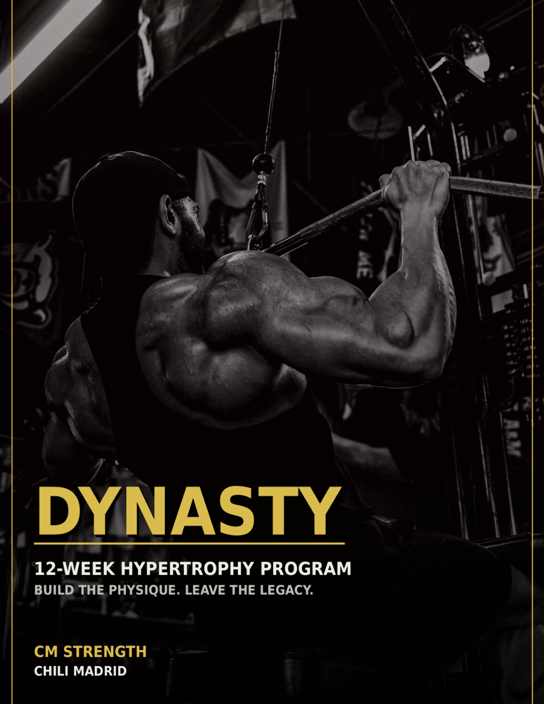
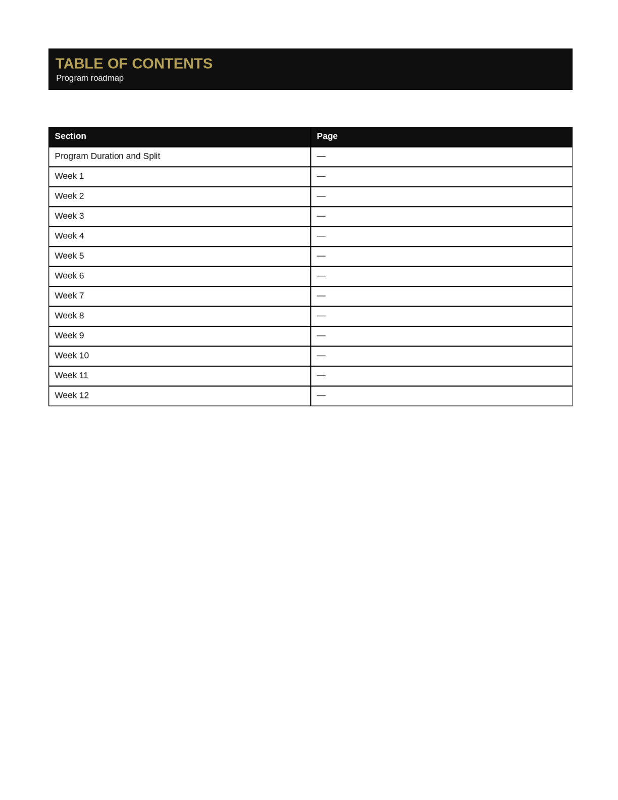
CM STRENGTH DYNASTY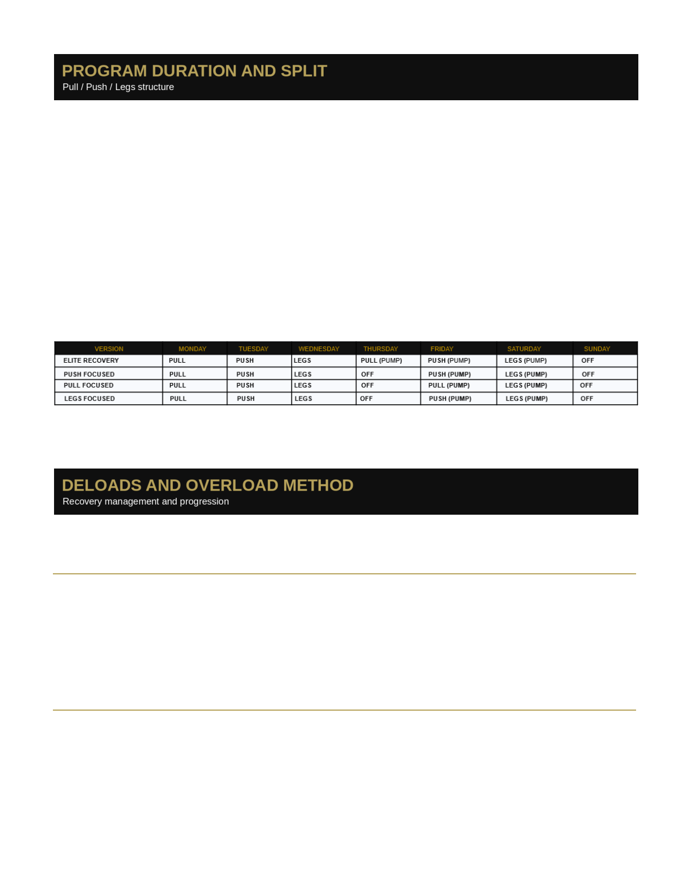
밀기 전에 당기는 것을 주목하세요. 그 이유는 다리와 등 훈련 기본일 사이에 허리에 휴식을 주는 것이 나에게는 더 합리적이기 때문입니다 나는 또한 푸시하는 날에 후면 삼각근을 가지고 있습니다. 실제로는 당기는 근육이지만, 단지 전체 삼각근이 한 번에 펌핑되는 것을 좋아하기 설정 방법은 주는 6일의 훈련으로 기록됩니다. 그러나 그것은 내가 가장 기대하는 바가 아닙니다. 나는 여러분 대부분이 펌프 데이 중 하나를 삭제하기를 펌프일을 뒤집어 처음 3일을 펌프일로, 마지막 3일을 기본일로 만들 수도 있습니다. 일반적으로 주말에는 사람들이 휴식 더 많으므로 주초에 훈련 분할 옵션은 다음과 같습니다. 디로드 디로드 이 프로그램에서는 필요할 때 언제든지 1주간의 디로드를 수행할 수 있는 옵션이 제공됩니다. 언제든지 1주일 디로드를 삽입하고 싶다면 그렇게 하세요! 이것이 올바른 선택인지 판단하는 몇 가지 간단한 방법: 1. 성능 감소: 파워 2. 헬스장에 가고 싶은 마음이 계속 들지 않음 3. 회복하는 데 어려움을 겪음(처음 4주 이후 과도한 통증) 열심히 다이어트를 하고 있다면 디로드할 1. 2일차부터 볼륨의 20%를 제거해야 합니다. 세트이(가) 실패하지 않도록 해야 합니다. 8 이하의 RPE을 사용해야 하며 그 이상은 과부하 방법 일반적으로 우리는 고강도 펌프 작업과 결합된 기본 이 프로그 이 프로그램의 경우 볼륨은 일정하며 주어진 기본 운동에 대한 기본 과부하 방법으로 증가된 반복을 사용하고 있습니다. 이 회복 영양 이러한 볼륨과 강도로 인해 최대 결과를 얻으려면 회복에 집중해야 합니다. 나는 다음을 사용하는 것을 적극 권장합니다. 최대 회복을 위해 운동 중에 아미노산, 전해질, 탄수화물을 섭취하세요. 이는 인슐린 반응을 자극하고 더 많은 아미노와 탄수화물을 근육으로 대부분의 남성은 10g의 EAA, 40-50g의 탄수화물로 잘 지냅니다. 크기에 따라 탄수화물의 양을 대부분의 여성은 10g의 EAA와 20-30개의 탄수화물을 섭취하면 잘 지냅니다. 다시 말하지만, 근육의 크기와 양에 따라 또한 체육관 밖에서의 스트레스를 줄이고 매일 밤 숙면을 취하는 것을 인생의 사명으로 삼으십시오. 이렇게 하면 회복도 크게 향상됩니다. 밴드 작업 밴드 작업은 밴드 사용은 선택 사항입니다. 통합하려는 경우 EliteFTS.net에서 필요한 밴드는 다음과 같습니다. 주황색 마이크로 미니 1개(페이스 풀용 및 여성이 체스트 프레스 기계에서 자주 사용하지만 이 경우 2개 주문) 빨간색 긴 프로 미니 CM STRENGTH DYNASTY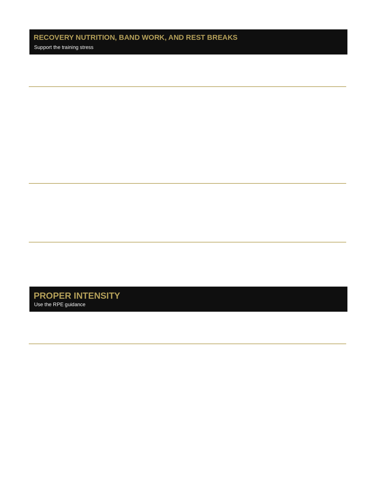
기본 작업 단계 1 4단계 - 스트레칭 자세에서 근육 훈련 - 90초 펌프 운동(몇 주 후에 추가 볼륨) 다르게 지정하지 않는 한 60초(때때로 수행함). 적절한 강도 실패에 대비하여 적절한 수준의 강도로 작업하는 것도 중요합니다. 너무 힘들거나 너무 쉽게 진행하면 결과가 저하될 수 있습니다. 나는 올바른 올바른 강도 수준에서 훈련하고 있는지 확인하려면 각 운동에 대한 RPE 제안을 따르십시오. 인지된 노력 흐름도 비율 워밍업처럼 상당히 쉬움 무게 @ 6.0 4-6회 더 할 수 있습니다 반복 @ 7.0 2-3회 더 할 수 있습니다 반복 @ 8.0 2회 @ 11 실패를 뛰어넘기 위해 고강도 기술을 사용함 @ 12 여러 고강도 기술을 사용함/격렬함 세트! @ 13 일반적으로 (항상 그런 것은 주간 분할 낮 월요일 화요일 수요일 목요일 금요일 토요일 일요일 집중하다 당기다 푸시 다리 풀 펌프 푸시 펌프 다리 펌프 끄다 연습세트 한국어 번역문 한국어 번역문 한국어 번역문 한국어 번역문 한국어 번역문 한국어 번역문 한국어 번역문 한국 한국어 번역문 한국어 번역문 한국어 번역문 한국어 번역문 한국어 번역문 한국 한국어 번역문 한국어 번역 한국어 번역문 한국어 번역문 한국어 번역문 한국어 번역문 한국어 번역문 한국 한국어 번역문 한국어 번역문 한국어 번역문 한국어 번역문 한국어 CM STRENGTH DYNASTY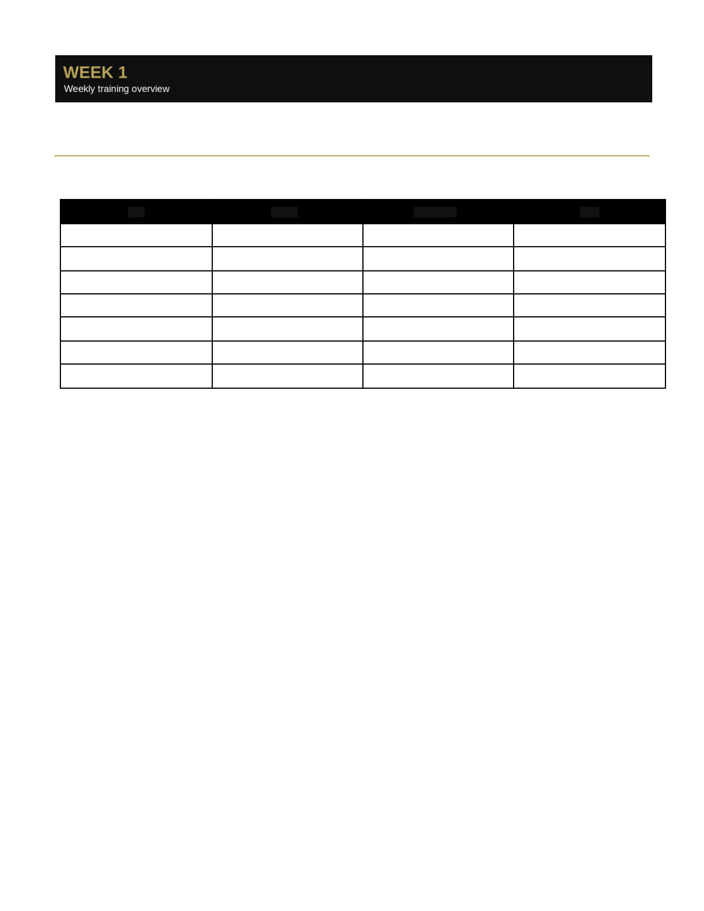
이것은 제가 Day 1/ 1/ 뒤로 이것은 이것은 이것은 8 28 이것은 이것은 8 27 이것은 우리 총 작 5 21 총 작업량 총 작업량 7 27 목표 목표: 펌프 7 28 2/ 돌아 2/ 돌아가 5 18 나는 당 OFF 0 0 CM STRENGTH DYNASTY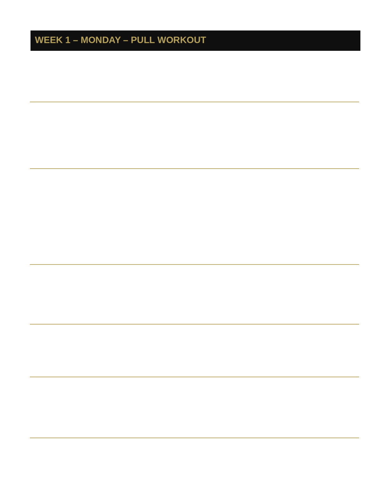
총 작업량 세트: 3 RPE: 9 목표: Supramax 펌프 프로 팁 흉골을 아치형으로 유지하십시오. 즉 3/ 돌아가기 | 덤벨 풀오버 이제 휴식 팔을 조금 펴고 풀오버를 입어 보세요. 밴드를 사용하는 것이 더 좋습니다. 가슴을 높이 들어 올리고, 벤치에서 허리를 편평하게 총 작업량 세트: 3 RPE: 9 목표: 스트레칭 자세에서 근육 훈련 4/ 4/ 돌아가기 | 4 나는 8 나는 나는 몇 년 전에 이 일을 총 작업량 세트 목표: Supramax 펌프 5/ 뒤로 | 바벨 하이퍼 이것은 매우 어렵고 매우 어려운 운동입니다. 이것에 시간을 투자하십시오. 반복을 느리게 실행하고 LIGHT를 시작하세요. 바벨을 못쓰신다면 총 작업량 세트 3 목표 9 목표 목표: Supra 5/ 뒤로 5/ 뒤로 | 데드 행 약간의 무게로 웨이트 벨트를 착용하고 풀업 바에 매달려 광배근을 스트레칭해 보세요. 최대한 오래 스트레칭하고 60초 동안 사격하세요. 프로 목표: 로드된 스트레칭 6/ 복근 | 벤치 레그 레이즈 거부하기 여기서 실패에 가까운 4 세트을 수행하십시오. 총 작업량 세트: 4 RPE: 9 7/ 이두근 | 일반적으로 나는 3 총 작 9 총 작 총 작업량 세트: 4 RPE: 9 목표: Supramax 펌프 8/ 이두근 | 덤벨 해머 컬 여기에서 8개 중 4개의 세트을 수행하고 8개의 반복을 수행한 후 바닥에서 5개의 부분을 압정으로 고정하여 모든 세트에 심한 한국어 섹션 제목 3 목표 9 목표 목표: Supra 프로 팁: 저는 허리 뒤에 1/ 가슴 | 인클라인 덤벨 프레스 나는 약간의 경사가 이것을 놀라운 근육 강화 도구로 만든다고 믿습니다. 이것은 앞으로 4주 동안 주요 점진적 걱정하지 마세요 3 RPE 8 RPE RPE에 주목하세 한국어 번역문 목표: 펌프 활성화 및 시작 2/ 가슴 | 인클라인 여기서 여기서 세트 of 6을 수행하면서 체중을 늘리시기 바랍니다. 6개를 간신히 짜낼 수 있게 총 작 총 작업량 세트 CM STRENGTH DYNASTY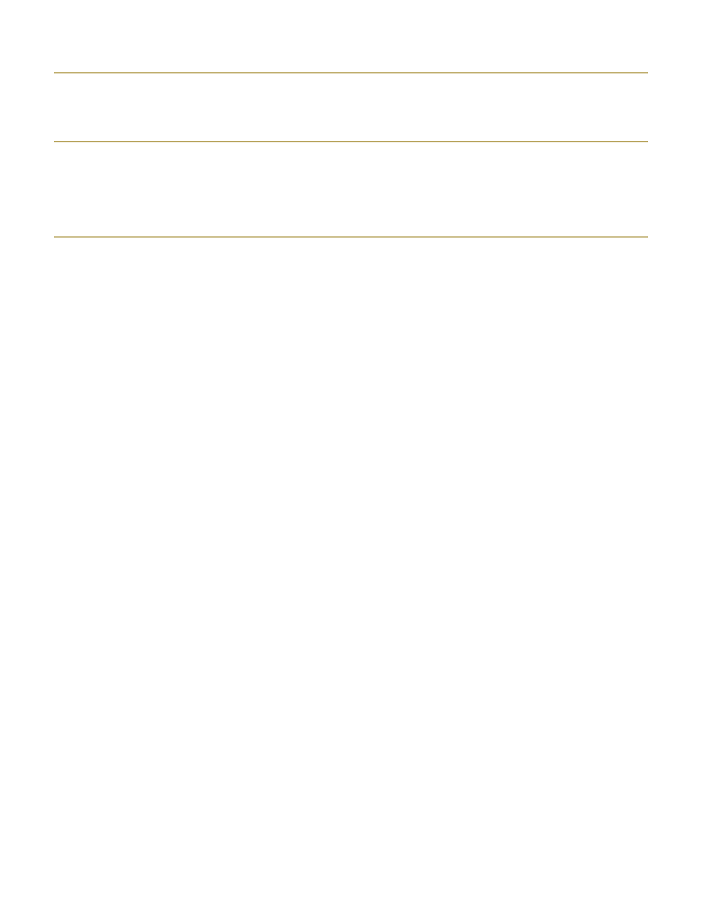
3/ 가슴 | 기계 프레스 오늘 여기서 최대 펌프를 위한 고강도 총 작업량 세트 4 목표 9 목표: Supramax 펌프 프로팁: 가슴에 닿기 직전에 1~2인치 정도 멈추면 회전근개에 가해지는 상당한 스트레스가 줄어들고 어깨가 더 건강해집니다. 여성은 일반적으로 4/ 가슴 | 머신 또는 케이블 플라이 이에 대해 8회 4 한국어 섹션 제목 9 한국어 섹션 제목 한국어 번 목표: 스트레칭 자세에서 근육 훈련 5/ 어깨 | 머신 리어 델트/리버스 펙 데크 동일한 무게로 4 RPE 9 RPE RPE은 마지막 목표 목표: Supramax 펌프 6/ 어깨 | 머신 또는 스미스 프레스 CM STRENGTH DYNASTY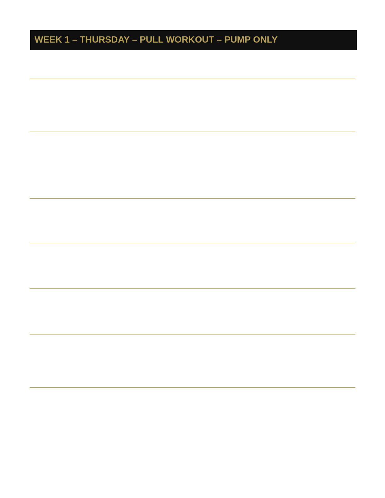
1/ 윗다리 | 레그 워밍업을 위해 2-3 세트을 한 후, 힘든 20 반복 웨이트를 사용하시기 바랍니다. 20대 대표가 극심해지길 바라요. 휴식 45초 동안만 총 작업량 목표: 펌프 활성화 4 2/ 9 2/ 2/ 윗다리 | 레그 프레스 제가 20대에 다리를 두근거리게 총 작업량 세트: 3 RPE: 9 목표: Supramax 펌프 3/ 윗다리 | 워킹 런지 슬로우모션처럼 이 4 이 작 9 이 작 이 작업을 총 작업량 세트: 3 목표: Supramax 펌프 4/ 윗다리 | 레그 컬 장착됨 여기서 9 여기서 여기서 60초 한국어 번역문 한국어 목표: Supramax 펌프 5/ 종아리 | 4 15회 9 15회 15회 중 6회 세트을 수행합니다. 모든 한국어 번역문 한국어 번역문 한국어 번역문 목표: Supramax 펌프 낮 4 월요일 8-9 월요일 월요일 화요일 수요일 목요일 3 금요일 9-10 금요일 금요일 토요일 일요일 집중하 9 CM STRENGTH DYNASTY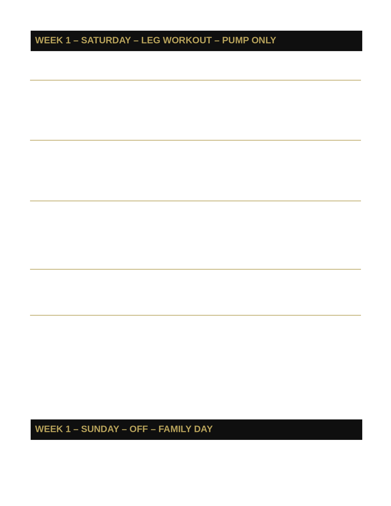
랙 풀을 한 후 오늘은 이것을 한국어 번역문 한국어 번역문 한국어 번역문 한국어 번역문 한국어 번역문 한국 목표: Supramax 펌프 데드 행 턱걸이 바에 매달리세 3 6/ 10 6/ 6/ 복근 | 레그 레이즈 여기서 실패에 가까운 4 7/ 이두근 | 바벨 컬 여기에서 8개 중 4개 세트을 수행하세요. 모든 반복에 3초 편심을 사용하세요! 3초 카운트를 하면서 무게를 낮추면서도 힘차게 구부려보세요! 총 작업량 세트: 4 RPE: 9 목표: Suprama 3 8/ 9 8/ 8/ 이두근 이제 그 팔에 심한 스트레칭을 한국어 번역문 한국어 번역문 한국어 번역문 한국어 번역문 한국어 번역문 한국 목표: 스트레칭 1/ 가슴 | 약간의 인클라인 덤벨 프레스 좋아, 지난 주의 반복을 2배로 이기자. 지난 한국어 섹션 제목 3 목표 9 목표 목표: 펌프 2/ 가슴 | 인클라인 바벨 프레스 여기서 세트 of 8을 수행하면서 체중을 늘리시기 바랍니다. 8개를 간신히 총 작업량 세트: 3 3 RPE 9 RPE RPE: 8-10 3/ 가슴 | 딥 오늘 여기서 최대 펌프를 위한 고강도 기술은 클러스터 세트입니다. 딥 어시스트 머신을 자유롭게 사용해 총 작업량 세트 6 목표 9 목표 목표: Supra CM STRENGTH DYNASTY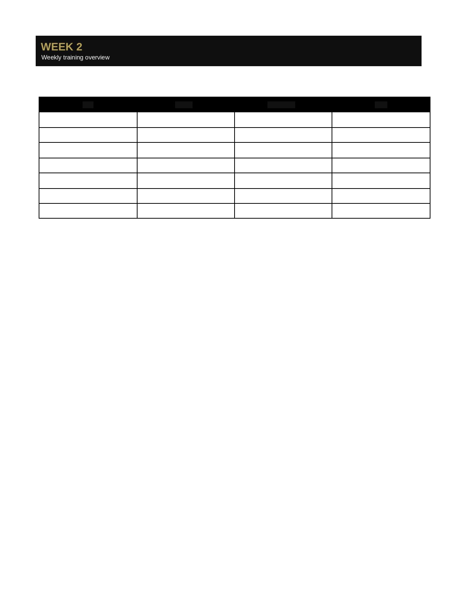
Day 이는 이는 아래로 한국어 한국어 한국어 섹션 제목 8 29 한국어 한국어 섹션 제목 8 27 한국어 목표 5 21 목표 목표: 스트 7 27 5/ 어 5/ 어깨 7 27 동일한 동일한 무게 5 19 한국어 OFF 0 0 CM STRENGTH DYNASTY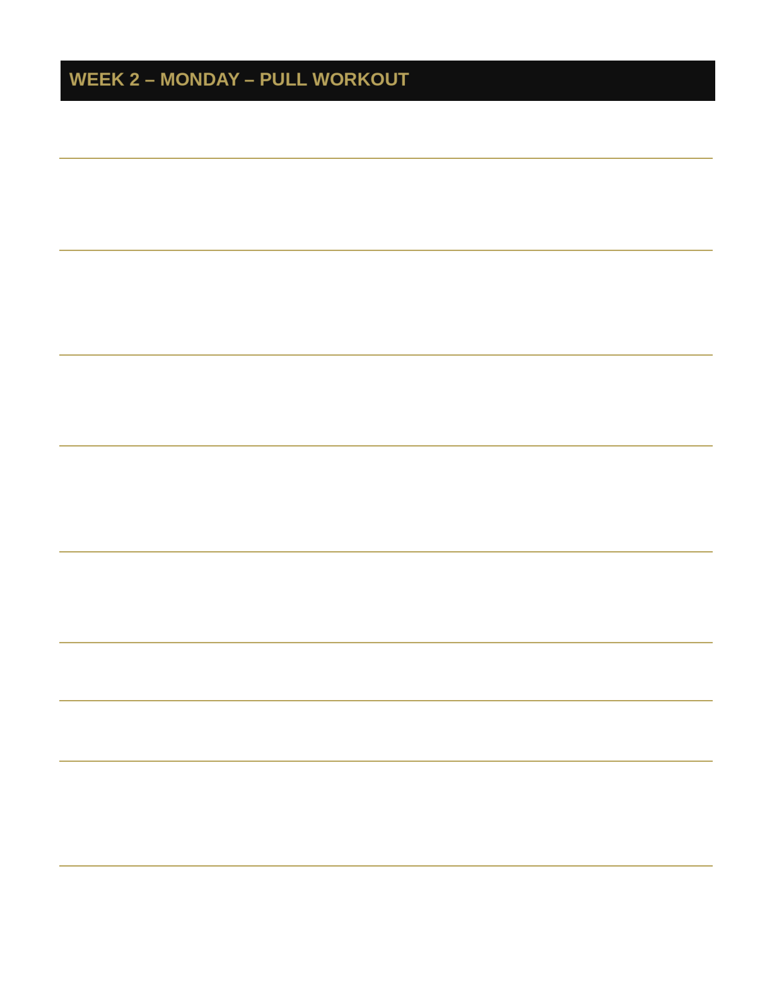
목표: Supramax 펌프 6/ 어깨 | 케이지 프레스 케이지 프레스를 4 총 작 9 총 작 총 작업량 세트: 4 RPE: 9 목표: 폭발적인 훈련 7/ 삼두근 | 단일 핸들 푸시다운 동일한 무게로 10 반복 중 4 세트을 수행합니다. 당신의 트리스는 모든 가슴 운동으로 인해 충분히 따뜻할 것이므로 1-2번의 워밍업 총 작업량 세트 3 목표 9 목표 목표: Supra 8/ 삼두근 | 인클라인 지난주와 동일하지만 인클라인 벤치를 이용합니다. 여기에서 12개 중 총 작업량 세트 3 목표 9 목표 목표: Supramax 펌프 1/ 윗다리 | 거짓말 여기에서 세트/10을 수행해 보세요. 완전히 워밍업되면 전체 반복을 사용하여 10회 중 4 세트을 수행한 다음 마지막 2회 세트 끝에 느린 총 작업량 세트: 4 RPE: 9-12 5 2/ 8-9 2/ 2/ 윗다리 3초 카운트 다운 후 1초 총 작업량 세트: 5 RPE: 8 목표: 폭발적인 훈련 2 3/ 8 3/ 3/ 윗다리 다리가 좋아지 총 작업량 세트: 3 참고: 마지막 반복 후에 즉시 목표: Supramax 4/ 윗다리 | 다리가 뻣뻣한 덤벨 여기에 9 여기에서 8개 중 3개 한국어 번역문 한국어 번역문 한국어 번역문 한국어 번역문 한국어 번역문 한국 목표 목표: 스트레칭된 4 5/ 9 5/ 5/ 종아리 이번 주에 다시 10개 중 6개 총 작업량 세트: 6 참고: 세트 사이에 4 한국어 섹션 제목 9 한국어 섹션 제목 한국어 번역문 한국어 번역문 CM STRENGTH DYNASTY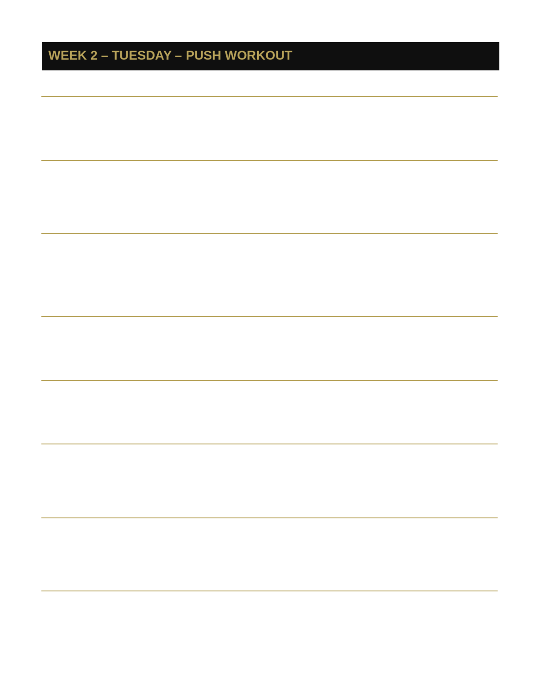
가능하면 단일 핸들을 사용하시기 바랍니다 총 작업량 세트: 4 RPE: 9 목표: 펌프 활성화 4 2/ 9 2/ 2/ 돌아가기 | 스트레이트 이것에 조금 의지하십시오. 나는 단일 슈퍼세트 3/ 돌아가기 | 평행 그립 풀다운 손바닥이 서로 3 총 작 총 작업량 세트: 8 RPE: 9 목표 목표: Supramax 프로 팁: 저는 4/ 돌아가기 | 가슴 지지 행 나는 여기서 T바 스타일에 더 가까운 머신을 사용하는 것을 좋아하지만 중요한 것은 허리에 스트레스가 없다는 것, 즉 가슴 지지대가 없다는 총 작업량 세트: 4 목표: Suprama 1 5/ 11 5/ 5/ 이두근 여기서 8개 중 4개 세트을 최대한 세게 한국어 번역문 한국어 번역문 한국어 번역문 한국어 번역문 한국어 번역문 한국 목표: 스트레칭 3 6/ 10 6/ 6/ 이두근 | 조트만 컬 이것은 해머 그립을 사용하는 싱글 암 프리처 컬입니다. 12개 한국어 번역문 한국어 번역문 한국어 번역문 한국어 번역문 목표: Suprama 4 7/ 8-11 7/ 7/ 복근 | 여기서 실패하려면 4 세트을 1/ 가슴 | 기계 프레스 가능하면 기울어지거나 기울어지지 않고 평평한 각도에 가까운 기계를 총 작업량 세트 4 목표 9 목표 목표: 펌프 활성화 2/ 가슴 | 인클라인 스미스 프레스 3초간 이센트릭하면서 바를 낮추고, 무게를 다시 올리기 전에 가슴 위에서 1~2인치 위에서 멈춥니다. 세트/10을 수행합니다. 그런 다음 총 작업량 총 작업량 세트 4 3/ 9 3/ 3/ 가슴 | 여기에서 세트 중 8개를 수행하고 잠금 상태까지 오지 마세요 한국어 번역문 한국어 번역문 한국어 번역문 한국어 번역문 한국어 번역문 한국 목표: Supramax 펌프 4/ 어깨 | 4 여기에 9 여기에 여기에서 15개 CM STRENGTH DYNASTY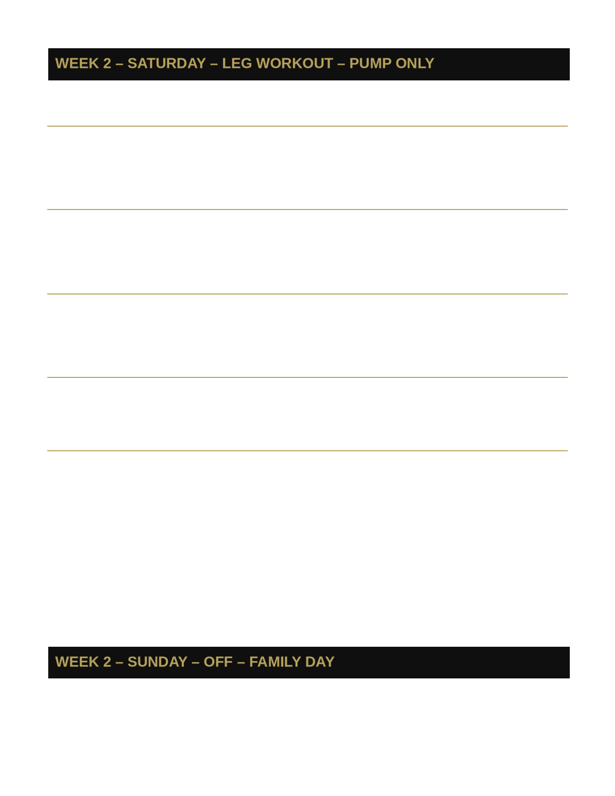
동일한 무게로 25개의 반복 중 한국어 번역문 한국어 번역문 한국어 번역문 한국어 번역문 한국어 번역문 한국 목표: Supramax 펌프 6/ 어깨 | 4 여기에 10 여기에 여기에서 8개 중 4개 세트을 목표: Supramax 펌프 7/ 삼두근 | 단일 핸들 푸시다운 동일한 무게로 20 반복 중 4 세트을 수행합니다. 가슴 운동을 하면 트리스가 충분히 따뜻할 것이므로 저는 세트 1~2회 한국어 섹션 제목 3 목표 9 목표 목표: Supra 8/ 삼두근 | 거짓말하는 지난주와 동일하지만 디클라인 벤치를 사용합니다. 여기에서 12개 중 4개 세트을 수행하세요. 케틀벨이나 EZ 컬 바를 자유롭게 사용해 한국어 번역문 한국어 번역문 한국 목표: 스트레칭 3 1/ 9 1/ 1/ 윗다리 여기에서 세트/8을 수행해 총 작업량 세트: 4 RPE: 11 목표: 활성화 및 3 2/ 9 2/ 2/ 윗다리 3초 카운트 다운 후 1초 정지 후 총 작업량 세트: 5 RPE: 8 목표: 폭발적인 훈련 6 3/ 9 3/ 3/ 윗다리 CM STRENGTH DYNASTY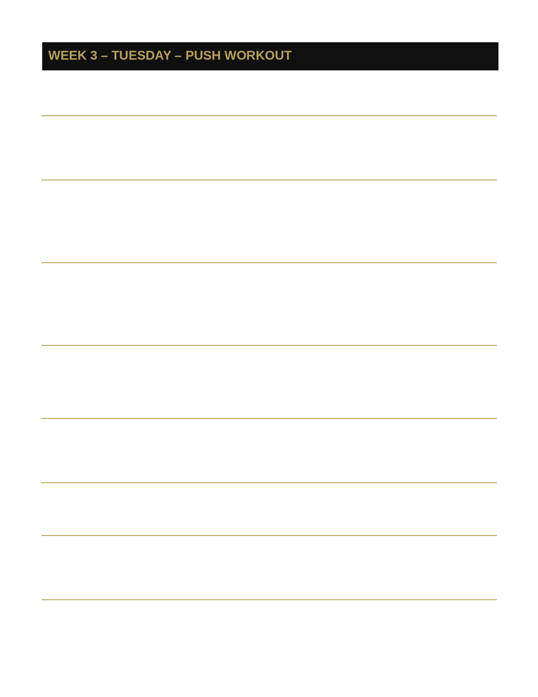
프로 팁: 경사 자세로 누울 때 팔꿈치를 뒤로 1/ 가슴 | 덤벨 프레스를 거부하세요 벤치의 한쪽 끝을 4 한국어 섹션 제목 9 한국어 섹션 제목 한국어 번역문 한국어 목표: 펌프 활성화 및 시작 2/ 가슴 | 펙 마이너 딥 역으로 어깨를 으쓱하는 것과 같습니다. 딥을 하는 것처럼 자세를 취하고 흉근을 이완시킨 다음 근육을 구부립니다. 바에 손을 대십시오 총 작업량 세트: 4개의 슈퍼세트 3/ 가슴 | 3 여기에 여기에서 세트 중 8개를 수행하고 한국어 섹션 제목 한국어 번역문 목표: 스트레칭 자세에서 4/ 어깨 | 덤벨 사이드 측면 여기에서 12개의 반복 중 4개의 세트을 수행하세요. 그런 다음 총 작업 세트: 4로 직접 진행합니다. 슈퍼세트 5/ 어깨 | 1 여기서 11 여기서 여기서 25 총 작업량 세트: 8 목표: Supramax 펌프 6/ 삼두근 | 삼두근 푸시다운 좋아하는 부착물을 3 한국어 섹션 제목 10 한국어 섹션 제목 한국어 번역문 한국어 번역문 목표: Supramax 펌프 7/ 삼두근 | 벤트 오버 트라이셉스 익스텐션 이제 이것으로 4 총 작 8-11 총 작 총 작업량 목표: 스트레칭 자세에서 근육을 단련하세요. 1/ 윗다리 | 거짓말 레그 컬 이거 낯익은데? 4 이것을 이것을 2번 한국어 번역문 한국어 번역문 목표: 펌프 활성화 및 시작 2/ 윗다리 | 4 이렇게 9 이렇게 이렇게 높고 한국어 번역문 한국어 번역문 한국어 번역 목표: Supramax 펌프 3/ 윗다리 | 4 다시 9 다시 다시 한 번, 4초 동안 이 범위를 CM STRENGTH DYNASTY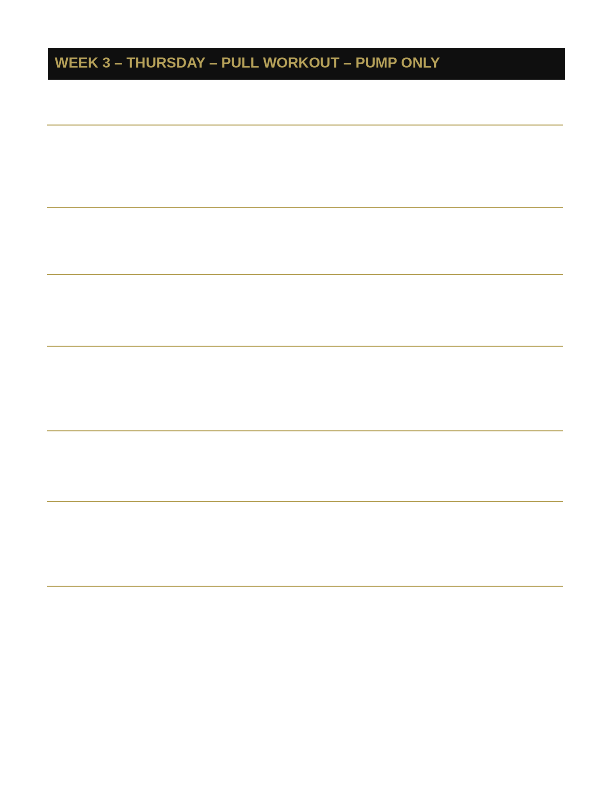
한국어 번역문 한국 한국어 번역문 한국어 번역문 한국어 번역문 한국어 번역문 한국어 번역문 한국 한국어 번역문 한국어 번역문 한국어 섹션 제목 4 한국어 섹션 제목 9 한국어 섹션 제목 한국어 번역문 한국어 1/ 뒤로 | 한쪽 팔 바벨 로우 처음 3주 동안 이 연습에서는 반복에 세트당 8 반복에서 12 반복까지 점진적으로 과부하가 걸렸습니다. 이제 8 반복로 돌아가겠습니다 총 작업량 세트: 4 RPE: 9-10 목표: 펌프 2/ 돌아가기 | 가슴 지지줄 이제 우리는 허리에 휴식을 줄 것이지만 능형근과 상부 광배근을 위해 계속 로잉을 할 것입니다. 오늘 우리는 10개 중 3개의 세트을(를) 할 총 작업량 세트 8 목표 9 목표 목표: Supra 3/ 돌아가기 | 턱걸이 이번 주에는 여기서 순서를 뒤집습니다. 가능한 한 많은 반복을 수행하세요. 팔이 너무 피곤해서 턱을 댈 수 없다면 보조 기계를 사용하세요 슈퍼세트 4 4/ 9 4/ 4/ 돌아가기 8 반복에 대해 다시 일반 케이블 한국어 번역문 한국어 번역문 한국어 번역문 한국어 번역문 한국어 번역문 한국 목표 목표 9 목표 목표: 스트레칭 5/ 뒤로 | 하이퍼확장 15-20번 중 3번 세트을 천천히 반복하세요. 다음 주에는 이 한국어 섹션 제목 4 목표 9-10 목표 목표: Supramax 펌프 5/ 복근 | 레그 레이즈 여기서 실패에 가까운 6 세트을 수행하십시오. RPE: 9 7/ 이두근 | 덤벨 컬 팔을 10 팔을 항상 팔을 항상 외전 상태로 유지하십시오(손바닥을 위로 올리십시오). 여기에서 8개 중 4개 세트을 수행하세요. 모든 반복에 3초 편심을 총 작업 CM STRENGTH DYNASTY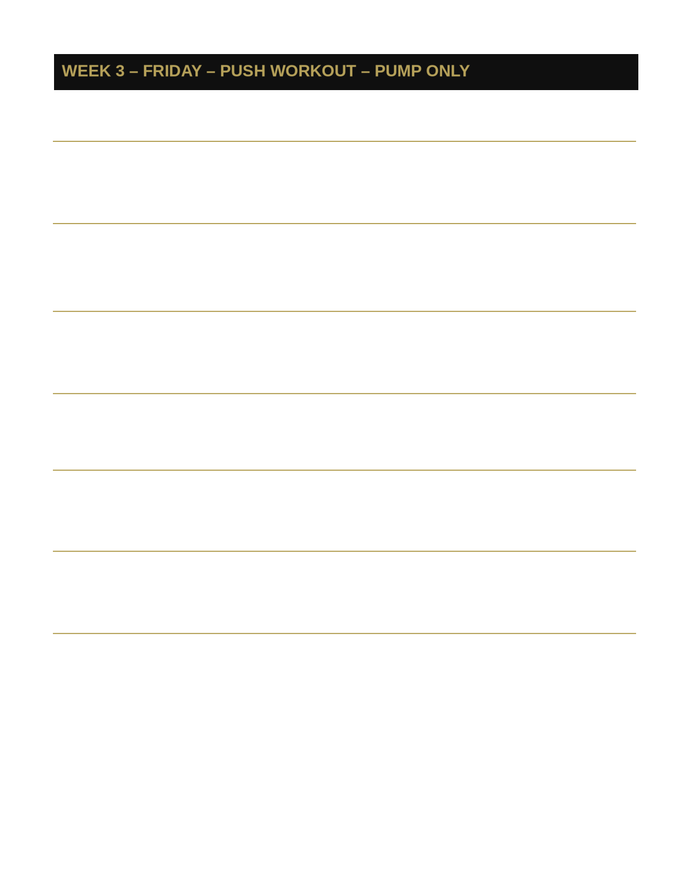
목표: Supramax 펌프 8/ 이두근 | 바벨 컬 여기서 EZ 바를 4 총 작 9 총 작 총 작업량 세트: 4 RPE 목표: Supramax 펌프 1/ 가슴 | 약간의 인클라인 덤벨 프레스 첫 번째 등 운동에서 했던 것처럼 이제 여기서는 세트/8로 돌아가지만 8주 동안 총 작업량 세트 4 목표: 펌프 2/ 가슴 | 인클라인 바벨 프레스 여기서 세트 of 6을 수행하면서 체중을 늘리시기 바랍니다. 6개를 간신히 총 작업량 세트: 3 8 RPE 9-10 RPE RPE: 8-10. 갈 수록 더 3/ 가슴 | 육각 프레스 오늘 여기서 최대 펌프를 위한 고강도 기술은 클러스터 45초 동안 멈췄다가 4 한국어 섹션 제목 목표: Supramax 펌프 4/ 가슴 | 여기서 10개 중 8 총 작 9 총 작 총 작업량 목표: 스트레칭 자세에서 근육 훈련 5/ 어깨 | 벤트오버 덤벨 스윙 지난 주에 25회 4 총 작 9 총 작 총 작업량 목표: Supramax 펌프 6/ 어깨 | 밴드 시티드 덤벨 프레스 지난주에 이거 마음에 들었나요? 좋아, 다시 해보자. 8의 세트을 다시 수행합니다 총 작업량 세트 4 목표 9 목표 목표: Supramax 펌프 CM STRENGTH DYNASTY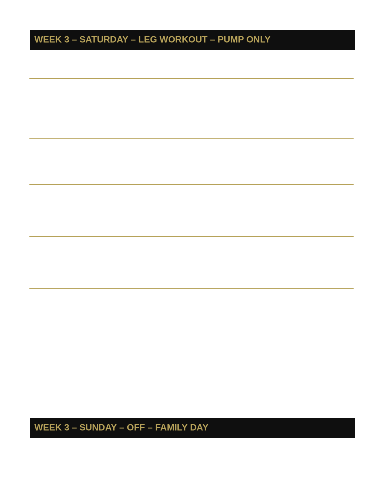
여기에서 10 반복 중 4 세트을 총 작업량 세트: 4 RPE: 9 목표: Supram 8/ 삼두근 | 케이블 오버헤드 확장 나는 실제로 이런 4 총 작 10 총 작 총 작업량 세트: 4 RPE: 9 목표: 스트레칭 자세로 근육 운동 1/ 윗다리 | 레그 컬 장착됨 10회 중 세트을 3 총 작 9 총 작 총 작업량 목표: 활성화 및 펌핑 2/ 윗다리 | 바벨 스쿼트 이번 주에는 그냥 일반적인 템포로 스쿼트를 해보세요. 지난 주에는 최대 1회 반복의 총 작업량 세트 3 목표 9 목표 목표: 폭발적인 3/ 윗다리 | 핵 스쿼트 10회에 힘든 적당한 체중을 얻으려면 5회 중 세트 중 1-2회 워밍업을 수행하세요. 시작하려면 10회 중 2회 세트을 수행하세요. 세 번째 총 작업량 세트: 3 참고: 마지막 3 목표 9 목표 목표: Supra 4/ 윗다리 | 레그 익스텐션 이 연습에서는 하나의 클러스터 세트를 수행할 것입니다. 8 반복을 허용하는 무게로 10 반복을 수행합니다. 처음 총 작업량 세트: 1 6 참고 9 참고 참고: 마지막 CM STRENGTH DYNASTY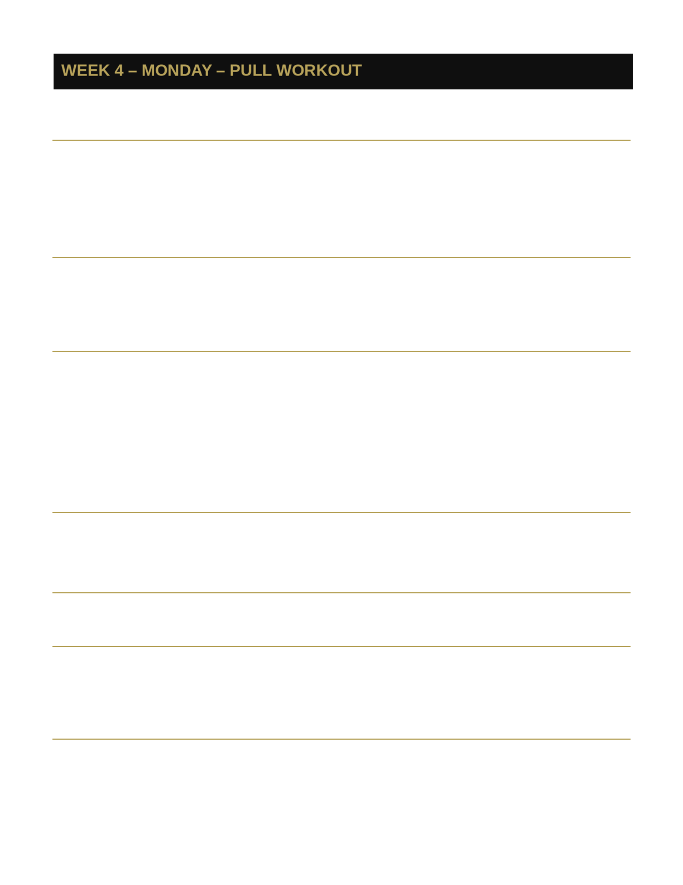
총 작업량 세트: 6 RPE 1/ 뒤로 | 덤벨 로우 여기에는 멋진 것이 없습니다. 힘든 10개 세트까지 작업하고 그것으로 4개의 세트을 수행하세요! 총 작업량 세트: 4 한국어 번역문 한국어 번역문 한국어 번역문 한국어 번역문 한국어 번역문 한국 목표: 펌프 활성화 및 시작 2/ 돌아가기 | 4 여기에 9-10 여기에 여기에서 8 반복을 슈퍼세트 3/ 돌아가기 | 턱 적어도 6개를 할 수 없다면, 이것을 먼저 하고 그 다음 풀오버를 두 번째로 하십시오. 파트너가 있다면 총 작업량 세트 3 목표 9 목표 목표: Supra 4/ 돌아가기 | 이것은 하부 승모근과 능형근을 위한 특수 운동입니다. 약간의 연습이 필요하지만 일단 느낌을 받으면 좋습니다. 가슴 지지 로우 머신이나 T바 총 작업량 세트: 4 RPE: 9 목표: Supra 5/ 이두근 | 여기서 8개 중 4개 세트을 최대한 세게 쥐어짜세요. 총 작업량 세트: 4 한국어 섹션 제목 8 목표 9-10 목표 목표: Supramax 펌프 6/ 이두근 | 해머 컬 12개 중 4개 세트을 수행합니다. 총 작업량 세트 3 목표 8-9 목표 목표: Supra 7/ 복근 | 시티드 여기서 실패하려면 6 세트을 1/ 9 1/ 가슴 | 플랫 덤벨 프레스 충분한 준비 운동을 한 후 12회 중 4회 세트을 수행하세요. 총 작업량 세트: 4 한국어 번역문 한국어 번역문 한국어 번역문 한국어 번역문 한국어 번역문 한국 목표: 펌프 활성화 4 2/ 9 2/ 2/ 가슴 | 딥 여기에서 8-10 중 세트을 슈퍼세트 2/ 가슴 | 8 반복 상단을 4 한국어 섹션 제목 10 한국어 섹션 제목 한국어 번 CM STRENGTH DYNASTY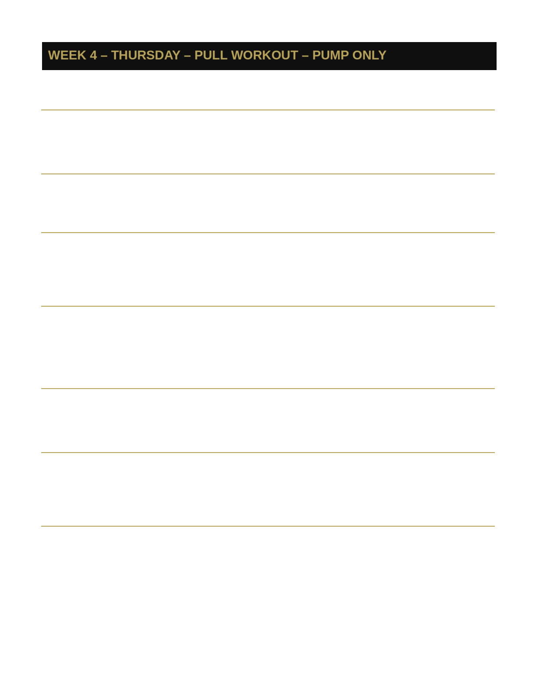
이제 우리는 머신의 총 작업량 세트: 3 RPE: 9-10 목표: 펌프 활성화 4 2/ 9 2/ 2/ 가슴 | 벤치 프레스 좋아, 몇 주 동안 경사면을 쉬고 플랫 총 작업량 세트: 5 RPE: 8-10 4 3/ 가슴 | 딥 필요한 경우 4/ 가슴 | 스트레칭 팔굽혀펴기 실패로 가십시오. 양식 새로 고침에 대한 활성화 순서를 참조하세요. 딥 한국어 섹션 제목 8 목표 9 목표 목표: 스트레칭 5/ 어깨 | 머신 숄더 8개 중 4개의 세트을(를) 폭발적으로 수행합니다. 총 작업량 세트: 4 RPE: 9 목표: 폭발적인 훈련 6/ 어깨 | 기계 후면 여기에서 모든 4 한국어 섹션 제목 9 한국어 섹션 제목 한국어 번 목표: Supramax 펌프 7/ 삼두근 | 푸시다운 여기에서 좋아하는 4 한국어 섹션 제목 9 한국어 섹션 제목 한국어 번 목표: Supramax 펌프 8/ 삼두근 | 우리는 이것을 4 한국어 섹션 제목 9 한국어 섹션 제목 한국어 번 목표: 스트레칭 자세로 근육 운동 1/ 윗다리 | 거짓말 레그 컬 지난주 10 CM STRENGTH DYNASTY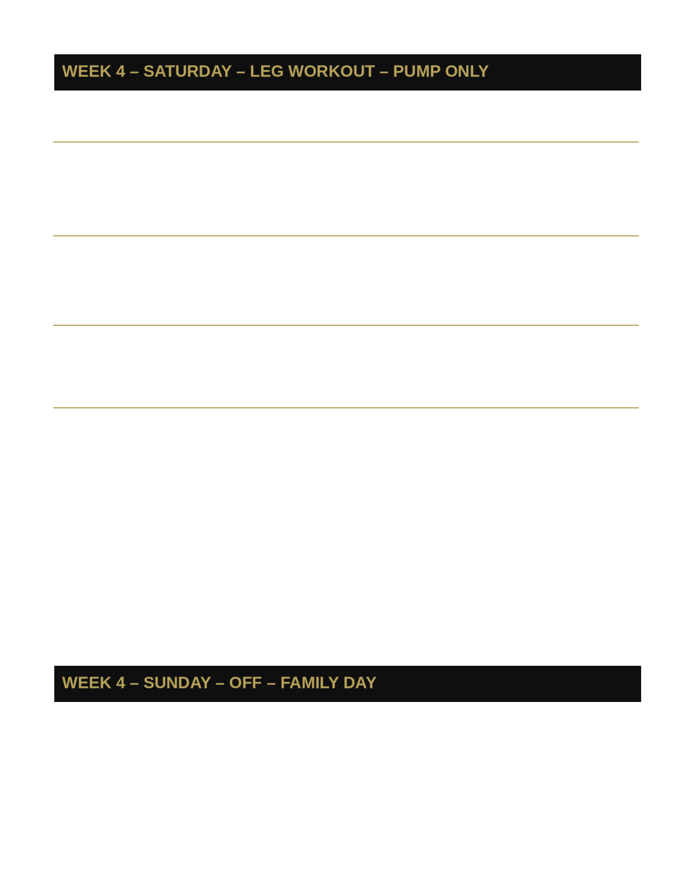
총 작업량 세트: 8 RPE: 9 목표: Supramax 펌프 4/ 돌아가기 | 켈소는 어깨를 으쓱한다 다시 Kelso의 3 총 작 8-10 총 작 총 작업량 세트: 4 RPE: 9 목표: Supramax 펌프 5/ 이두근 | 덤벨 컬 여기서 8개 중 4개 세트을 가능한 한 세게 쥐어짜고 한국어 섹션 제목 8 한국어 섹션 제목 목표: Supramax 펌프 6/ 이두근 | 케이블 해머 컬 12개 중 4개 8 총 작 9 총 작 총 작업량 목표: Supramax 펌프 7/ 복근 | 로프 크런치 우리는 이미 케이블 6 1/ 9 1/ 1/ 가슴 | CM STRENGTH DYNASTY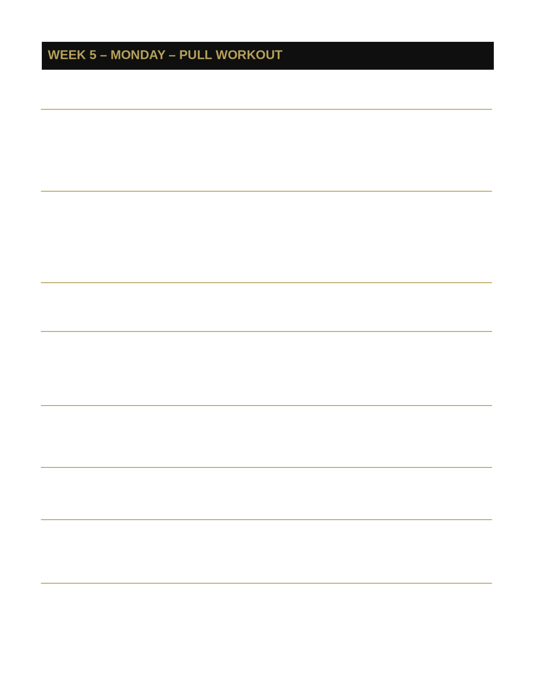
여기에서 8-10 중 한국어 번역문 한국어 번역문 한국어 번역문 한국어 번역문 한국어 번역문 한국 목표: Supramax 펌프 4/ 어깨 | 스미스 또는 기계 프레스 나는 당신이 무거워지 4 슈퍼세 9 슈퍼세 슈퍼세트 5/ 어깨 | 덤벨 여기서도 세트 of 8을 수행하세요. 숄더 슈퍼세트 - 오버헤드 스미스 프레스 및 측면 측면 총 작업 세트: 8 한국어 번역문 한국어 번역문 한국어 번역문 한국어 번역문 한국어 번역문 한국 목표: Supramax 펌프 6/ 삼두근 | 내전된 리베이트 10개 중 4개 5 총 작 8-9 총 작 총 작업량 세트 목표: Supramax 펌프 7/ 삼두근 | 이를 수행하려면 총 작업량 세트 목표: Supramax 펌프 오늘은 당신을 8 1/ 9-10 1/ 1/ 윗다리 | 레그 프레스 이것은 제가 원했던 총 작업량 세트: 5 RPE: 9 목표: Supr 2/ 9 2/ 2/ 윗다리 여기서는 그다지 큰 비중을 총 작업량 세트: 3 RPE: 9 목표: Suprama 6 3/ 9 3/ 윗다리 | 거짓말 이것을 마지막으로 수행하면 실제로 기분이 좋아질 것입니다. 혈액은 매우 빠르게 햄으로 총 작업량 세트 4 목표 9 목표 목표: Supra 4/ 종아리 | 시티드 카브 레이즈 중간 중량으로 15회 중 6회 세트을 수행합니다. 모든 세트의 마지막 한국어 섹션 제목 4 목표 9-10 목표 목표: Supra CM STRENGTH DYNASTY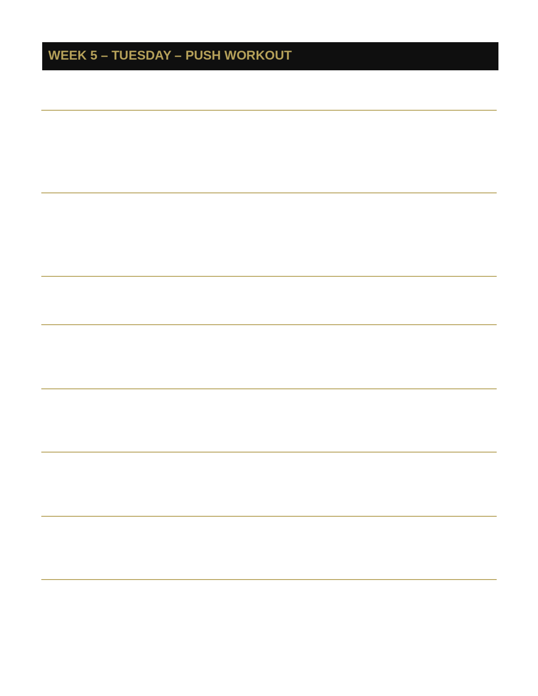
월요일 화요일 수요일 목요일 금요일 3 토요일 9-10 토요일 토요일 일요일 집중하다 당기다 푸시 다리 5 풀 펌 풀 펌프 푸시 푸시 펌프 다리 펌프 끄다 연습세트 한국어 번역문 한국어 한국어 번역문 한국어 번역문 한국어 번역문 한국어 번역문 한국어 번역문 한국 한국어 섹션 제목 6 한국어 섹션 제목 10 한국어 섹션 제목 한국어 번역문 한국어 번역문 한국어 번역문 한국어 번역문 한국어 번역문 한국어 번역문 한국어 한국어 섹션 제목 4 1/ 9 1/ 1/ 뒤로 | 충분한 워밍업을 마친 후 지난 주 8의 한국어 번역문 한국어 번역문 한국어 번역문 한국어 목표: 펌프 활성화 4 2/ 9 2/ 2/ 돌아가기 지난주에 우리는 이것에 앞으로 몇 주 동안 핀 높이를 변경할 예정이니 즐겨보세요. 또한 이 총 작업량 세트 4 목표 9 목표 목표: 폭발적인 3/ 돌아가기 | 스트레이트 암 푸시다운 여기에서 8 반복을 수행한 다음 SUPERSET WITH 4/ 돌아가기 | 4 이제 9 이제 이제 허리에 휴식을 주고 광배근을 더욱 CM STRENGTH DYNASTY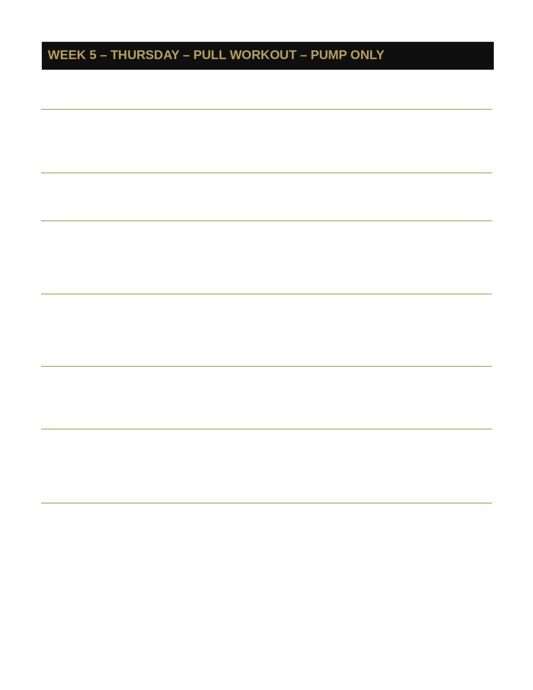
목표: 폭발적인 훈련 6/ 어깨 | 기계 후면 삼각근 플라이 여기서 25개 중 4 한국어 섹션 제목 9 한국어 섹션 제목 한국어 번역문 한국어 목표: Supramax 펌프 7/ 삼두근 | 푸시다운 여기에서 좋아하는 총 작업량 세트: 4 RPE: 9 목표: Supramax 펌프 8/ 삼두근 | 라잉 케틀벨 익스텐션 여기에서 12개 8 목표 9 목표 목표: 스트레칭 1/ 윗다리 | 레그 프레스 이것을 조금 흔들어서 먼저 해보자. 이제 레그 컬에 대해 몇 가지 워밍업을 수행하고 세트은 작동하지 않기를 바랍니다. 오늘 다시 여기서 세트 총 작업량 세트: 3 RPE: 9 목표: 폭발적인 훈련 4 2/ 9 2/ 2/ 윗다리 폭발성 외에도 반복 및 이에 총 작업량 세트: 3 RPE: 9 목표: 폭발적인 훈련 4 3/ 9 3/ 3/ 윗다리 여기서는 8개 중 3개의 세트을 총 작업량 세트 목표: Suprama 4 4/ 9 4/ 4/ 윗다리 이제 레그 컬로 이동해 총 작업량 세트: 4 RPE: 10 목표 10 CM STRENGTH DYNASTY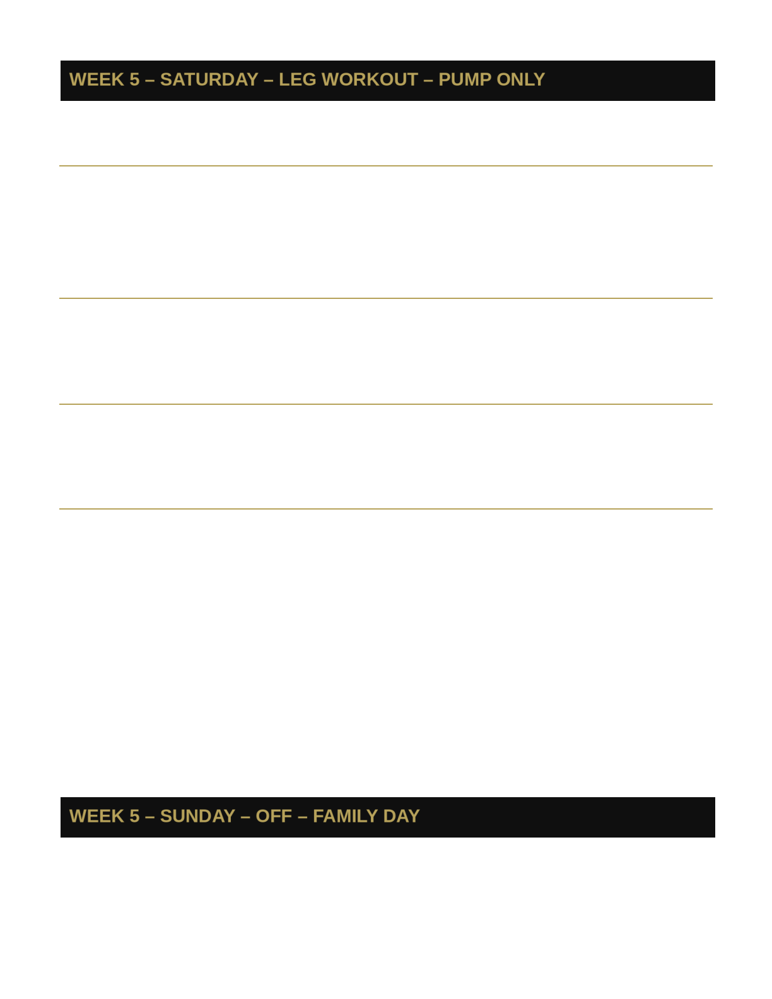
우리는 이번 주에 근육 총 작업량 세트: 4 RPE: 9 목표: 펌프 활성화 및 시작 2/ 가슴 | 덤벨이나 케이블 플라이 덤벨을 사용하는 경우에는 3/4 정도만 올라가고 흉근의 긴장을 잃지 마십시오. 8 느린 반복을 주고 바로 다음으로 이동하세요. 총 작업 슈퍼세트 3/ 가슴 | 5 플라이 9 플라이 플라이 웨이트를 한국어 번역문 한국어 번 목표: Supramax 펌프 4/ 어깨 | 시티드 덤벨 프레스 나는 당신이 이것에 3 총 작 9 총 작 총 작업량 5/ 어깨 | 덤벨을 측면 측면 여기서도 15개를 하세요. 뒤쪽 삼각근만 사용할 정도로 너무 앞으로 구부리지 마십시오. 45도 정도가 좋습니다. 마지막 라운드를 마칠 총 작업량 세트: 8 RPE: 9 목표: Suprama 4 6/ 9-10 6/ 6/ 삼두근 10개 중 4개 세트을 수행합니다. 총 작업량 세트: 4 RPE: 9 목표: Suprama 6 7/ 9 7/ 7/ 삼두근 CM STRENGTH DYNASTY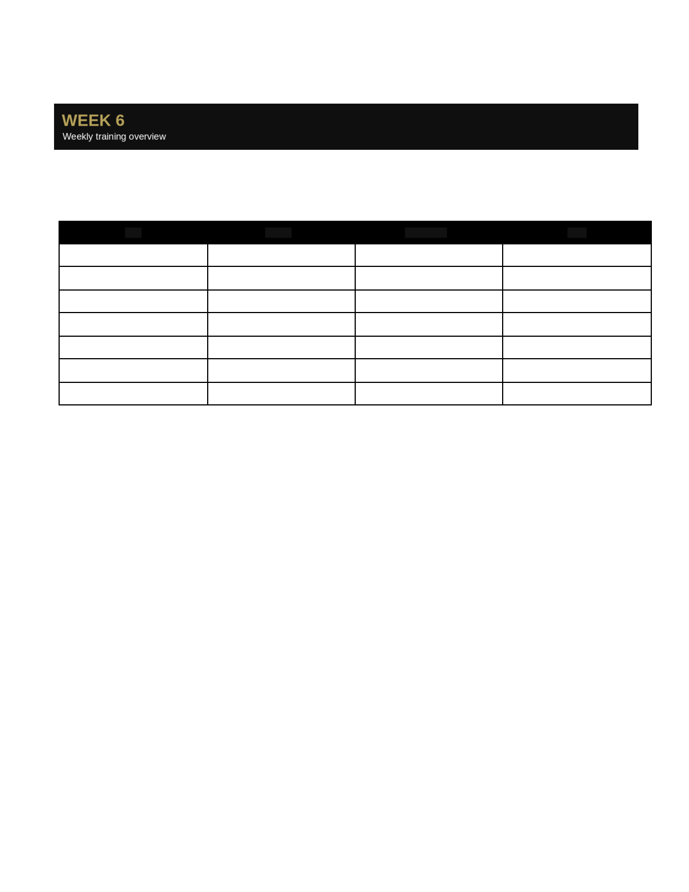
Day 한국어 한국어 목표 목표 목표 8 34 목표 목표 8 30 목표: Su 1/ 5 21 1/ 윗다 1/ 윗다리 7 30 이번 주 이번 주에 7 28 총 작업량 총 작업량 5 21 목표 OFF 0 0 CM STRENGTH DYNASTY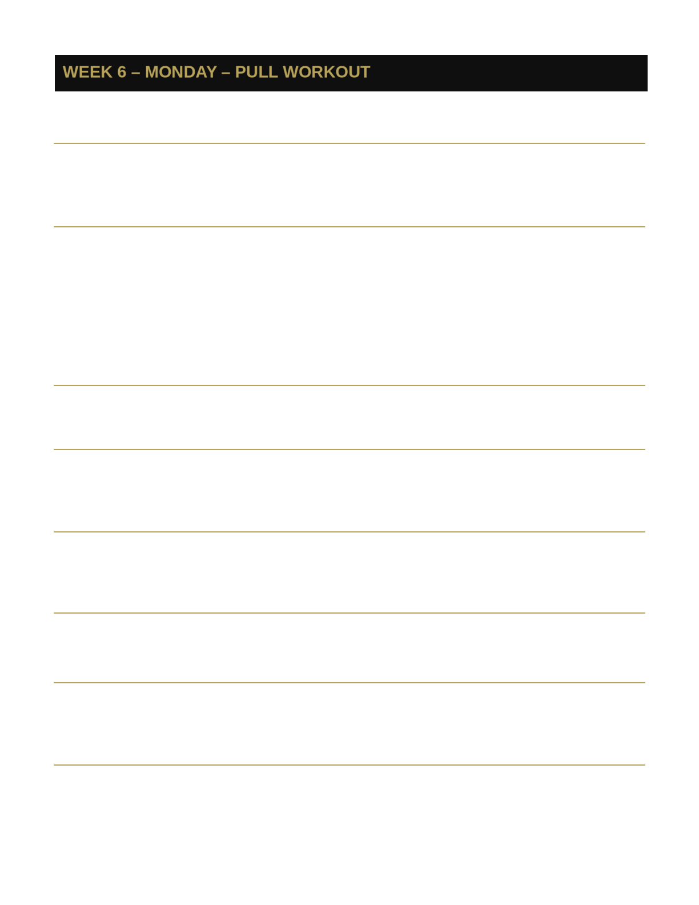
2/ 윗다리 | 루마니안 당신이 무슨 생각을 하는지 알아요, 그 사람은 뭐하는 거예요? 그냥 하세요. 10 반복 여기서는 3/4 잠금 상태가 되고 SUPERSET 3/ 윗다리 | 4 각 다 9 각 다 각 다리를 천천히 8걸음씩 한국어 번역문 한 목표: Supramax 펌프 4/ 윗다리 | 레그 컬 장착됨 여기에서 90초 휴식 시간으로 12개 중 4개의 세트을 수행하세요. 총 작업량 세트: 4 한국어 번역문 한국어 번역문 한국어 번역문 한국어 번역문 한국어 번역문 한국 목표: Supramax 5/ 종아리 | 시티드 카브 레이즈 중간 중량으로 15회 중 한국어 섹션 제목 5 목표 8-9 목표 목표: Supramax 낮 월요일 화요일 수요일 목요일 금요일 8 토요일 9-10 토요일 토요일 일요일 집중하다 당기다 푸시 9 푸시 푸시 다리 풀 펌프 푸시 펌프 6 다리 9 다리 펌프 끄다 연습세트 4 한국어 섹션 제목 9-10 한국어 섹션 제목 한국어 번 한국어 번역문 한국어 번 한국어 번역문 한 한국어 섹션 제목 4 한국어 섹션 제목 9-10 한국어 섹션 제목 한국어 번 CM STRENGTH DYNASTY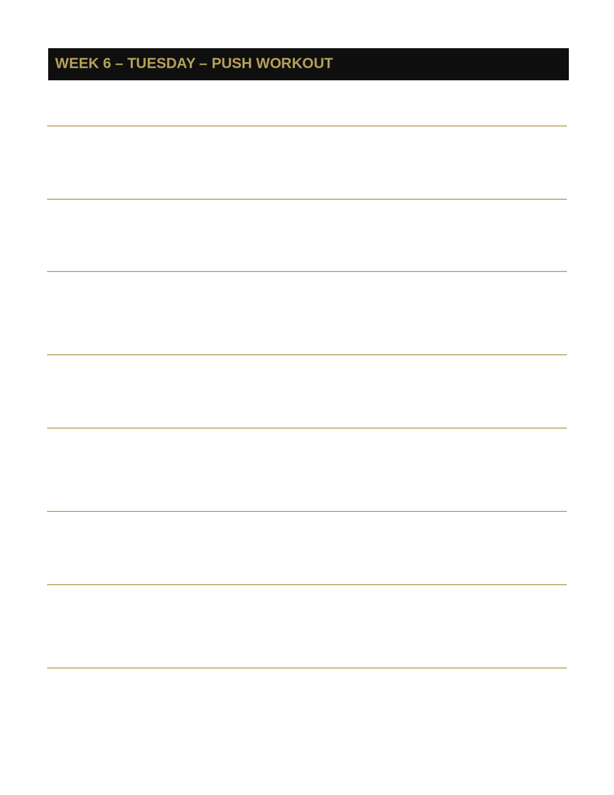
한국어 번역문 한국 1/ 뒤로 | 메도우즈 로우 충분한 워밍업 3 총 작 9-10 총 작 총 작업량 세트: 4 RPE: 9 목표: 펌프 활성화 및 시작 2/ 돌아가기 | 랙 당김 지난 주에 우리는 5 총 작 총 작업량 세트: 5 RPE: 9 목표 목표: 폭발적인 훈련 3/ 돌아가기 여기서 10개 중 4개 세트을 수행하세요. 총 작업량 세트: 4 RPE: 9 목표: 스트레칭 자세에서 근육 훈련 4/ 돌아가기 | 3 허리를 9-10 허리를 허리를 휴식하고 여기에서 지원되는 몇 총 작업량 세트: 4 RPE 목표: Supramax 펌프 5/ 복근 | 3 여기서 9-10 여기서 여기서 실패에 6/ 이두근 | 덤벨 프리처컬 컬 여기에서 8개 중 4개 세트을 수행하세요. 무게를 천천히 낮추고 조절하십시오. 총 작업량 세트: 4 한국어 번역문 한국어 번역문 목표: Suprama 4 7/ 9 7/ 7/ 이두근 | 여기서 30초 휴식 시간을 두고 12개 중 한국어 번역문 한국어 번역문 한국 목표: Suprama 4 1/ 9 1/ 1/ 가슴 | 무게! 12개 중 3개 목표: 펌프 활성화 및 시작 2/ 가슴 | 인클라인 이제 인클라인 4 RPE 9 RPE RPE: 8-10 3/ 가슴 | 딥 이번 주에 다시 반복하고 총 작업량 세트 4 목표 9 목표 목표: 스트레칭 자세에서 근육 훈련 CM STRENGTH DYNASTY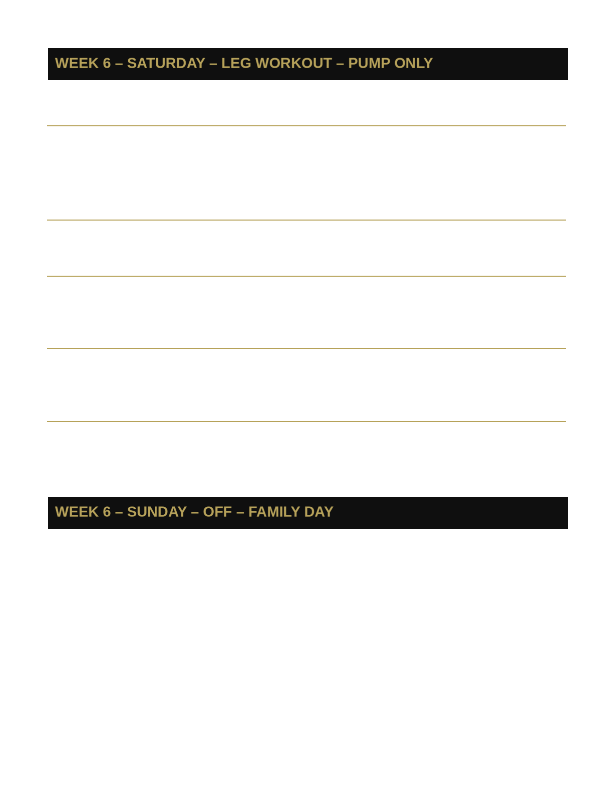
총 작업량 세트: 4 RPE 목표: Supramax 펌프 거대한 세트를 즐길 시간입니다! 1/ 윗다리 | 레그 익스텐션 모든 반복의 상단을 3 슈퍼세 9 슈퍼세 슈퍼세트 2/ 윗다리 | 고블릿 스쿼트 여기에서 케틀벨이나 덤벨을 사용하여 10 딥 반복 여기서 3/4 잠금까지 진행한 다음 즉시 다음으로 이동하세요. 총 작업 세트: 4 슈퍼세트 3/ 윗다리 | 워킹 런지 이제 레그 익스텐션 기계에서 멀어지도록 각 다리로 5걸음씩 총 작업량 세트 8 4/ 9 4/ 4/ 윗다리 가능한 한 오랫동안 구부린 1회만 수행하면 라운드가 완료됩니다. 4라운드 수행 한국어 섹션 제목 4 목표 9-10 목표 목표: Supra 5/ 종아리 | 시티드 카브 레이즈 중간 중량으로 15회 중 6회 세트을 수행합니다. 모든 세트의 마지막 반복에서는 10초 동안 스트레칭 자세로 앉아 있습니다. 총 작업량 한국어 섹션 제목 6 목표 9 목표 목표: Supra CM STRENGTH DYNASTY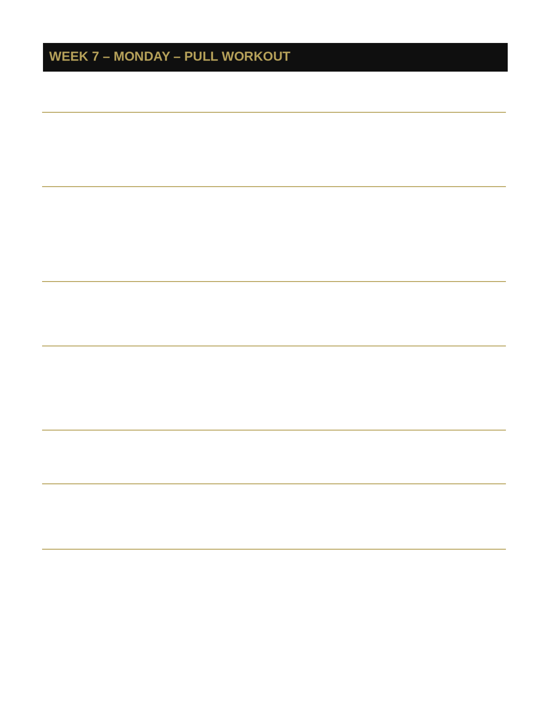
일요일 집중하다 당기다 푸시 4 다리 9 다리 다리 풀 펌프 푸시 펌프 다리 펌프 끄다 연습세트 한국어 섹션 제목 5 한국어 섹션 제목 9 한국어 섹션 제목 한국어 번역문 한국어 번역문 한국어 한국어 번역문 한 한국어 섹션 제목 4 한국어 섹션 제목 9 한국어 섹션 제목 한국어 번역문 한국어 번역문 한국어 번역문 한국어 번 1/ 뒤로 | 메도우즈 로우 우리는 3주에 걸쳐 담당자 범위를 확장했으며 이제 8개의 세트으로 돌아가지만 더 무거운 가중치를 적용했습니다! 지금 8개 중 4개의 세트에 총 작업량 목표: 펌프 활성화 4 2/ 9-10 2/ 2/ 돌아가기 좋습니다. 이번 주는 이것에 한국어 번역문 한국어 번역 목표: 폭발적인 훈련 6 3/ 9 3/ 돌아가기 | 싱글 암 하이 로우 머신 하이 로우를 사용하는 것이 좋습니다. 여기서 10개 중 4개 세트을 한국어 섹션 제목 4 목표 9-10 목표 목표: 스트레칭 4/ 돌아가기 | 지원되는 지난 주에 했던 내용을 반복해 보겠습니다. 허리를 유지하고 여기서 지원되는 행을 수행해 봅시다. 나는 이것의 T바 스타일 버전을 좋아하지만 4 세트/8. 4 총 작 9-10 총 작 총 작업량 CM STRENGTH DYNASTY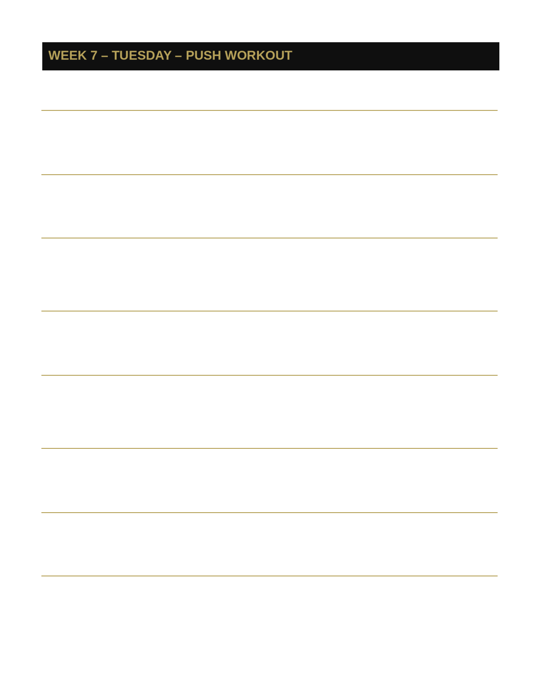
5/ 복근 | 행잉 레그 레이즈 여기서 실패에 가까운 6 6/ 이두근 | 3 여기에 9-10 여기에 여기에서 8개 중 4개 세트을 한국어 번역문 한국어 번역 목표: Supramax 펌프 7/ 이두근 | 3 웨이트 웨이트를 컬링하면서 회외시킵니다 총 작 총 작업량 세트 목표: Supram 1/ 가슴 | 기계 프레스 이제 반복을 12로 옮겼으므로 오늘은 8의 세트으로 돌아갑니다. 하지만 몇 주 전에 8로 했던 것보다 가중치가 더 무거워졌습니다! 총 작업량 세트 3 목표 9-10 목표 목표: 펌프 활성화 및 시작 2/ 가슴 | 인클라인 바벨 간신히 8개를 얻을 수 있을 때까지 8개 중 세트을 수행하십시오. 지난 주에 6개 반복을 사용하여 수행한 것과 비슷한 무게를 사용하도록 총 작업량 세트: 3 3 RPE 9-10 RPE RPE: 8-10. 갈 수록 더 3/ 가슴 | 플랫 덤벨 프레스 여기서 10개 중 3개 세트을 수행하세요. 가슴 근육의 긴장을 유지하려면 반복을 3/4 잠금 장치로 가져가세요. 세 번째 세트에서는 드롭 총 작업량 세트: 3 RPE 목표: Suprama 4 4/ 9-10 4/ 4/ 가슴 | 여기에 10개 중 3개의 세트을 주세요. 크게 한국어 번역문 한국어 번역문 한국 목표: 스트레칭 4 5/ 9 5/ 5/ 어깨 | 오늘은 이것에 대해 좀 한국어 번역문 한국어 번역문 한국어 번역문 한국어 번역문 한국어 번역문 한국 목표: Suprama 4 6/ 9 6/ 6/ 어깨 | 여기에서 15회 중 4회 세트을 수행하고 모든 반복의 한국어 번역문 한 목표: Suprama 4 7/ 9 7/ 7/ 삼두근 | 로프 푸시다운 CM STRENGTH DYNASTY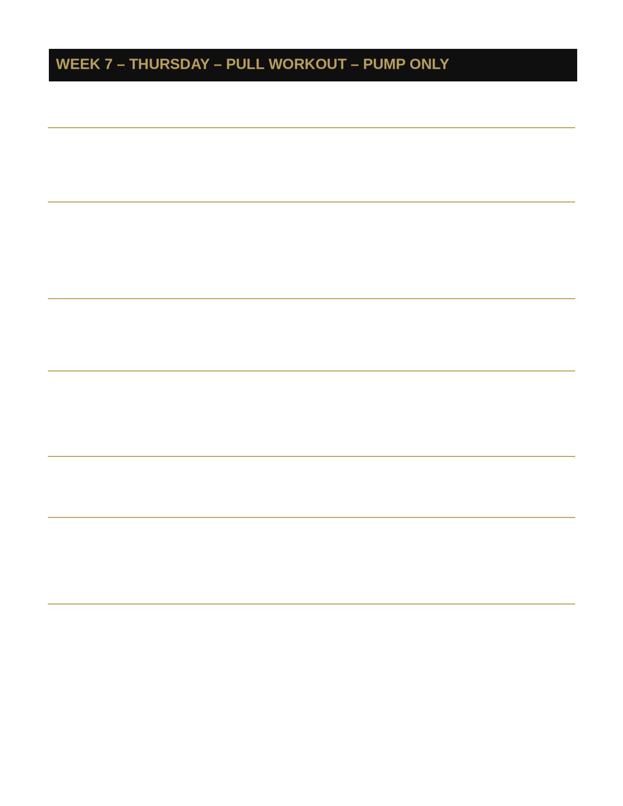
한국어 번역문 한국어 번역 1/ 뒤로 | 밴드형 턱업 랫 풀다운에서 4 한국어 섹션 제목 9 한국어 섹션 제목 한국어 번역문 한국어 목표: 펌프 활성화 및 시작 2/ 돌아가기 | 풀오버 기계 나는 턱걸이 후에 이것을 좋아합니다. 10개 중 4개 세트을 수행합니다. 총 작업량 세트: 4 한국어 섹션 제목 4 목표 9 목표 목표: Supra 3/ 돌아가기 | 기계 높은 행 이 기계가 없으면 일반 랫 풀다운을 수행할 수 있지만 Heavy로 가십시오. 나는 당신이 이 리프트의 늘어난 부분에 집중하기를 바랍니다 총 작업량 세트: 4 RPE: 9 목표 9 목표 목표: 스트레칭 4/ 돌아가기 | T-바 행 여기서 10개 중 4개 세트을 수행하세요. 총 작업량 세트: 4 RPE: 9 목표: Supramax 펌프 5/ 이두근 | 4 여기에 9 여기에 여기에서는 총 작업량 세트: 4 목표: Supramax 펌프 6/ 9 6/ 6/ 이두근 이두근이 아마도 총에 맞았을 한국어 번역문 한국어 번역문 한국어 번역문 한국 목표: Suprama 4 7/ 9 7/ 7/ 복근 | 여기서 실패하려면 6 세트을 1/ 가슴 | 덤벨 트위스트 이 작 9 CM STRENGTH DYNASTY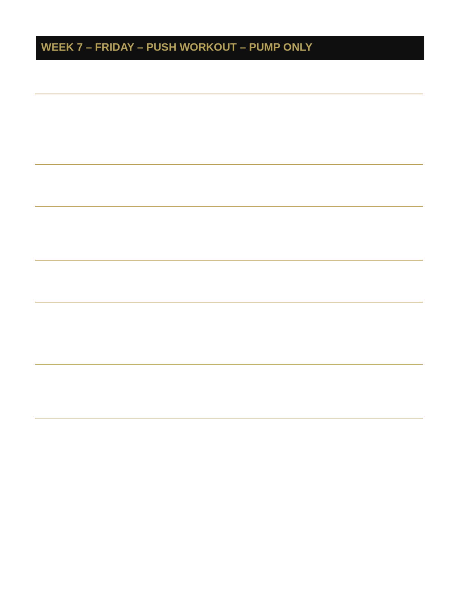
총 작업량 세트: 4 RPE: 9 목표: 펌프 활성화 및 시작 2/ 가슴 | 펙 마이너 딥 최소한의 최소한의 팔꿈치 4 3/ 9 3/ 3/ 가슴 | 넓은 그립 딥 여기서는 3/4만 올라오세요 한국어 번역문 한국어 번역문 한국어 번역문 한국어 번역문 한국어 번역문 한국 목표: Supra 4/ 어깨 | 기계 후면 측면 나도 이 콤보를 반복하고 싶다. 이것은 큰 망치 후방 삼각근을 개발하는 데 미친 짓입니다. 15 반복을 수행한 후 총 작업량 세트 8 5/ 9 5/ 5/ 어깨 | 이제 덤벨을 휘두르기만 하면 후면 삼각근을 총 작업량 세트: 8 목표: Supra 6/ 삼두근 | Vbar 푸시다운 여기에서 8개 중 4개 세트을 수행하세요. 매우 느린 네거티브로 멋지고 무거워지세요. 총 작업량 세트: 4 한국어 번역 목표: Suprama 8 7/ 9 7/ 7/ 삼두근 여기에서 12개 중 4개 세트을 목표: Supramax 펌프 GIANT 세트 4 1/ 9 1/ 1/ 윗다리 모든 반복의 상단을 1초 동안 슈퍼세트 2/ 윗다리 | 여기서 케틀벨이나 4 슈퍼세 10 슈퍼세 슈퍼세트 CM STRENGTH DYNASTY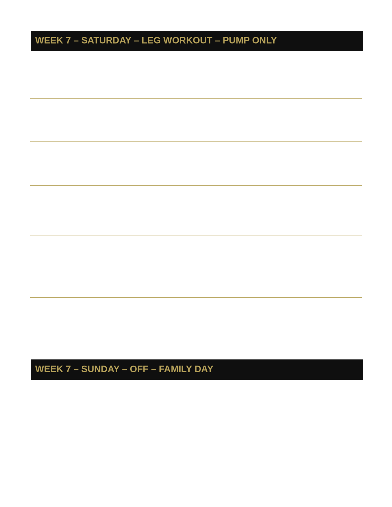
이제 레그 익스텐션 슈퍼세트 4/ 윗다리 | 레그 익스텐션에 대한 Iso 보류 가능한 한 오랫동안 4 1회만 수행하면 한국어 번역문 한국어 번 목표: Supramax 펌프 5/ 종아리 | 4 중간 중량으로 한국어 번역문 한국어 번 목표: Supramax 펌프 낮 월요일 8 화요일 수요일 목요일 금요일 토요일 일요일 16 집중하 9 집중하 집중하다 당기다 푸시 다리 6 풀 펌 9 풀 펌 풀 펌프 CM STRENGTH DYNASTY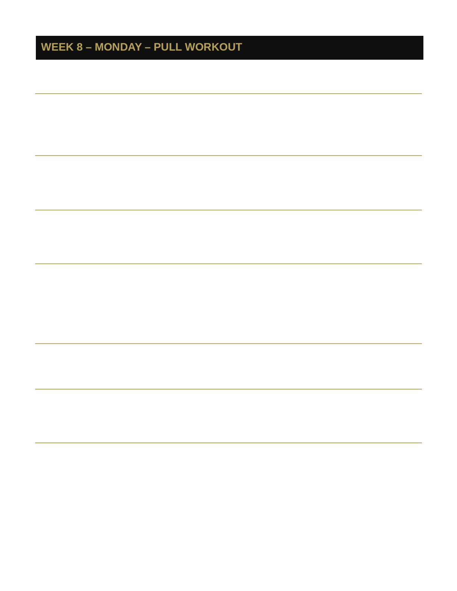
한국어 번역문 한 한국어 번역문 한국어 번역문 한국어 번역문 한국어 번역문 한국어 번역문 한국 한국어 번역문 한국어 섹션 제목 4 1/ 9 1/ 1/ 뒤로 | 덤벨 로우 내가 지난 30년 이상 총 작업량 세트: 4 RPE: 9 목표: 펌프 활성화 5 2/ 9 2/ 2/ 돌아가기 | 이제 우리는 허리를 떼어내고 이것을 총 작업량 세트: 4 RPE: 9 목표: Suprama 4 3/ 9 3/ 3/ 돌아가기 | 낮은 케이블 행 여기서 10번 중 4번 세트을 한국어 번역문 한국어 번역문 한국어 번역문 한국어 번역문 한국어 번역문 한국 목표: Supramax 펌프 4/ 돌아가기 | 풀오버 여기서 10개 한국어 섹션 제목 4 목표 9-10 목표 목표: 스트레칭 5/ 뒤로 | 하이퍼확장 이것들은 매우 조심하되 매우 한국어 섹션 제목 6 목표 9 목표: Supramax 펌프 6/ 복근 | 행잉 레그 레이즈 여기서 실패에 4 7/ 9-10 7/ 7/ 이두근 여기에서 12개 중 4개 세트을 수행하세요. 여기서는 한국어 번역문 한국어 번역문 한국어 번역문 한국어 번역문 한국어 번역문 한국 목표: Supramax 펌프 8/ 이두근 | 4 팔뚝 9-10 팔뚝 팔뚝 윗부분도 CM STRENGTH DYNASTY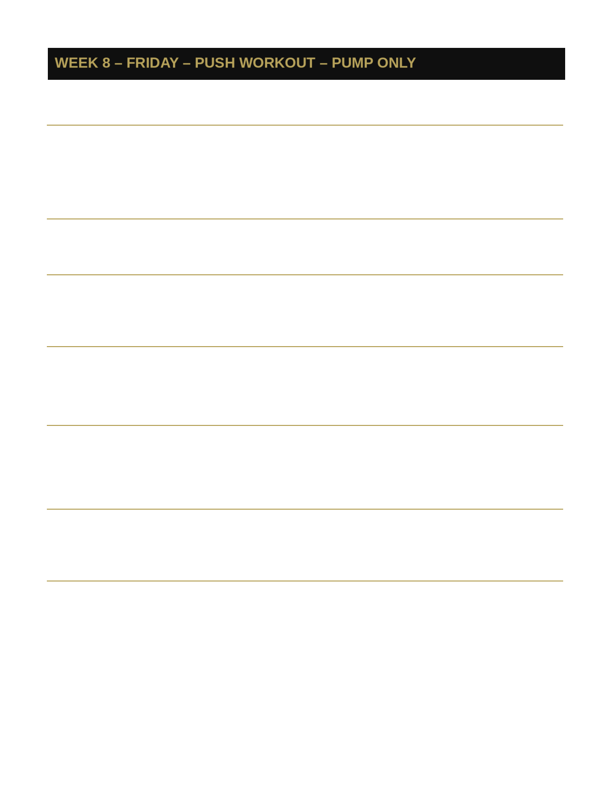
슈퍼세트 5/ 어깨 | 거미 크롤링 세트당 3번씩 벽을 오르내리세요. 밴드가 없다면 덤벨이나 웨이트 플레이트를 들고 하셔도 됩니다. 총 작업량 세트: 8 한국어 번역문 한국어 번역문 한국어 번역문 한국어 번역문 한국어 번역문 한국 목표: Suprama 4 6/ 9 6/ 6/ 삼두근 | 싱글 암 푸시다운 여기 양쪽에서 8개 중 4개 한국어 번역문 한국어 번역문 한국어 번역문 한국어 번역문 한국어 번 목표: Supra 7/ 삼두근 | 케틀벨 여기에서 12개 중 4개 세트을 수행하세요. 총 작업량 세트: 4 RPE: 10 목표: Suprama 8 1/ 9 1/ 1/ 윗다리 모든 반복 둔근을 쥐어짜면서 상단을 1초 2/ 윗다리 | 누운 레그 컬 to: 여기에서 10 4 3/ 윗다리 선택한 기계는 플레이트 로드가 아닌 중량 선택기 따라서 당신은 꽤 힘든 20회 세트를 수행하게 됩니다. 모든 반복은 연속적이어야 합니다. 멈춰야 한다면 다시 시작하세요. 너무 무거워요 그게 다야! 5 한국어 섹션 제목 8 목표 9 목표 목표: Supra 4/ 윗다리 | 스미스 런지 여기서 둔근에 초점을 맞춰 10개 중 4개의 세트을 수행합니다. 한쪽 다리에 8개의 반복을 총 작업량 세트 4 목표 9 목표 목표: Supra 5/ 종아리 | 시티드 카브 레이즈 중간 중량으로 15회 중 한국어 섹션 제목 4 목표 10 목표 목표: Supra CM STRENGTH DYNASTY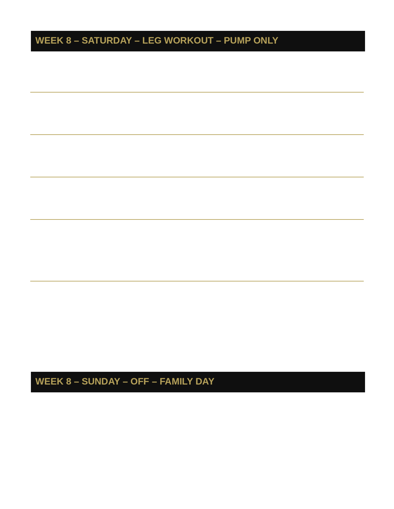
월요일 화요일 수요일 목요일 금요일 토요일 일요일 집중하다 당기다 푸시 다리 풀 펌프 푸시 펌프 다리 펌프 끄다 16 연습세 9 연습세 연습세트 한국어 번역문 한국어 번 한국어 번역문 한국어 번역문 한국어 번역문 한국어 번역문 한국어 번역문 한국 한국어 섹션 제목 6 한국어 섹션 제목 9 한국어 섹션 제목 한국어 번 CM STRENGTH DYNASTY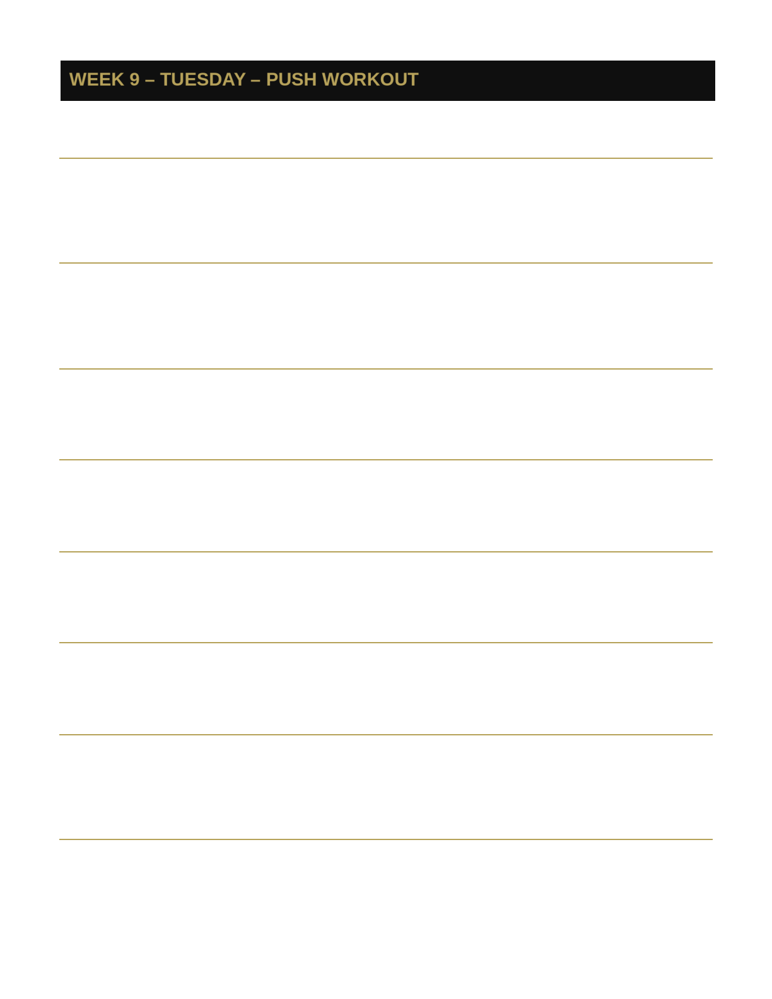
총 작업량 세트: 3 RPE: 10 목표: Supramax 펌프 4/ 가슴 | 케이블 플라이 여기서 10개 중 3 총 작 9-10 총 작 총 작업량 세트: 3 RPE 목표: 스트레칭 자세에서 근육 훈련 5/ 어깨 | 오버 앤 백 프레스 여기에서 8개 중 4개 세트을 수행하세요. Over and Back은 1회라는 것을 기억하세요. 머리를 비우기만 하면 되고, 잠글 필요는 한국어 섹션 제목 3 목표 목표: Supramax 펌프 6/ 6/ 어깨 | 기계 이제 후면 삼각근에 한국어 번역문 한국어 번역문 한국어 번역문 한국어 번역문 한국어 번 목표: Suprama 3 7/ 9-11 7/ 7/ 삼두근 여기서 10개 중 4개 목표: Supramax 펌프 8/ 삼두근 | 3 제가 9-10 제가 제가 가장 좋아하는 삼두근 피니셔로 다시 총 작업량 세트: 4 RPE: 9 목표: 스트레칭 자세로 근육 운동 1/ 윗다리 | 4 세트 9 세트 세트 몇 번 한국어 번역문 한국어 번역문 목표: 활성화 및 펌핑 2/ 윗다리 | 4 이번 9 이번 이번 주에는 총 작업량 세트: 4 RPE: 9-11 목표: 폭발적인 훈련 3/ 윗다리 | 레그 프레스 이번 주에는 발 4 총 작 9 총 작 총 작업량 목표: Supramax 펌프 4/ 윗다리 | 핵 스쿼트 1.5초 여기에서 8개 중 4 총 작 9 총 작 총 작업량 세트: 3 RPE: 9 CM STRENGTH DYNASTY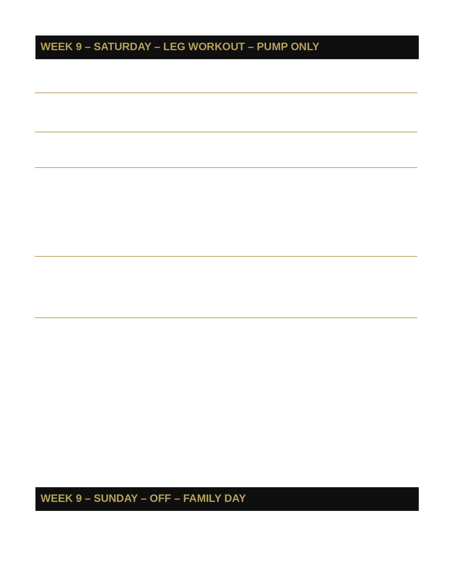
푸시 펌프 다리 펌프 끄다 연습세트 한국어 번역문 한국어 번역문 한국어 번역문 한국어 번역문 한국어 번역문 한국어 섹션 제목 8 한국어 번역문 한국어 번 한국어 번역문 한국어 번역문 한국어 번역문 한국어 번역문 한국 한국어 번역문 한국어 번역문 한국어 번역문 한국어 번역문 한국어 번역문 한국 한국어 번역문 한국어 번역문 한국어 번역문 한국어 번역문 한국어 번역문 한국 한국어 번역문 한국어 번역문 한국어 번역문 한국어 번역문 한국어 번역문 한국 1/ 뒤로 | 덤벨 로우 워밍업을 한 다음 4 한국어 섹션 제목 9-10 한국어 섹션 제목 한국어 번 목표: 펌프 활성화 및 시작 2/ 돌아가기 | 어깨를 으쓱하다 지난 주에는 총 55개의 반복을 수행했고, 이번 주에는 총 한국어 섹션 제목 4 목표 9 목표 목표: Supra 3/ 돌아가기 | 지원되는 가슴 줄 나도 이 자세를 유지하고 싶지만 그립을 바꿔주셨으면 합니다. 지난 주에 회내 그립을 사용했다면 이번 주에는 중립 그립이나 회외 그립을 총 작업량 세트 6 목표 9 목표 목표: Supra CM STRENGTH DYNASTY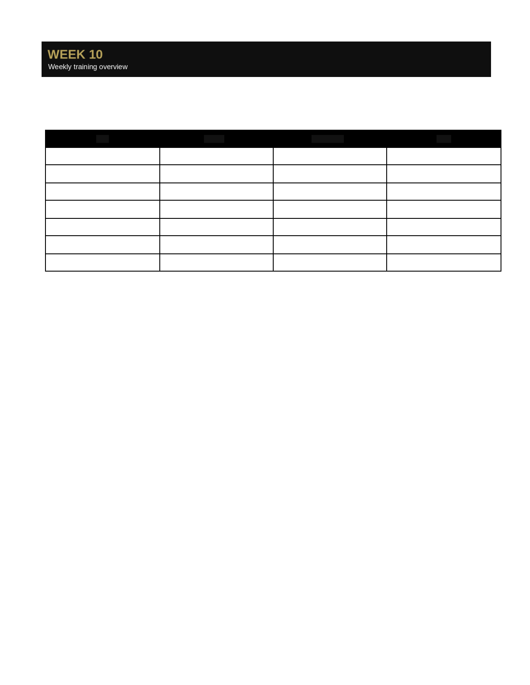
Day 여기에 여기에서 한국어 한국어 한국어 섹션 제목 8 32 한국어 한국어 섹션 제목 8 28 한국어 목표 5 17 목표 목표: 스트 7 30 5/ 뒤 5/ 뒤로 7 27 이번 주 이번 주 5 18 한국어 OFF 0 0 CM STRENGTH DYNASTY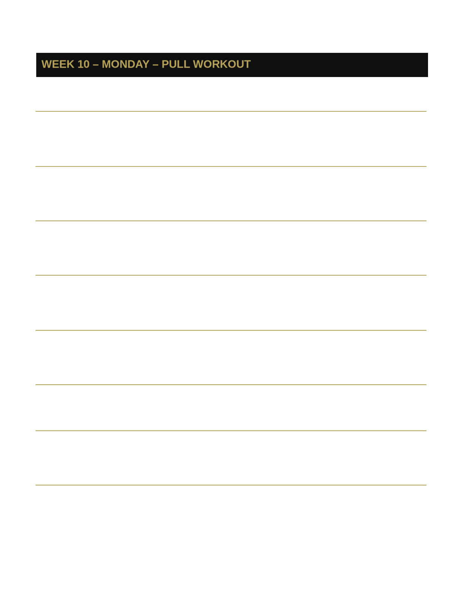
목표: Supramax 펌프 6/ 복근 | 행잉 레그 레이즈 여기서 실패에 4 7/ 9 7/ 7/ 이두근 | 덤벨 항상 손바닥을 한국어 번역문 한국어 번역문 한국어 번역문 한국어 목표: Suprama 4 8/ 9 8/ 8/ 이두근 EZ 바 부착을 사용하여 드래그 총 작업량 세트: 4 RPE: 9-10 목표: Suprama 4 1/ 9 1/ 1/ 가슴 | 이번 주에 우리는 마지막 세트에서 총 작업량 세트: 3 RPE: 9-10 목표: 펌프 활성화 3 2/ 9-10 2/ 2/ 가슴 | 인클라인 바벨 프레스 이번 주에는 정지를 유지하겠습니다 총 작업량 세트: 3 RPE: 8-10 3 3/ 9 3/ 3/ 가슴 | 이제 밴드 프레싱을 해보겠습니다 총 작업량 세트: 3 RPE: 10 목표: Suprama 6 4/ 9 4/ 가슴 | 싱글 암 머신 플라이 여기서 10번 중 3번 세트을 수행하여 가슴을 활 모양으로 만들고 열심히 스트레칭하세요. 총 한국어 섹션 제목 4 목표 9-10 목표 목표: 스트레칭 5/ 어깨 | 오버 앤 백 프레스 나는 약간 더 높은 반복을 사용하여 다음 주에 이 작업을 수행하고 싶습니다. 이번 주에 총 작업량 세트 4 목표 9-10 목표 목표: Supra CM STRENGTH DYNASTY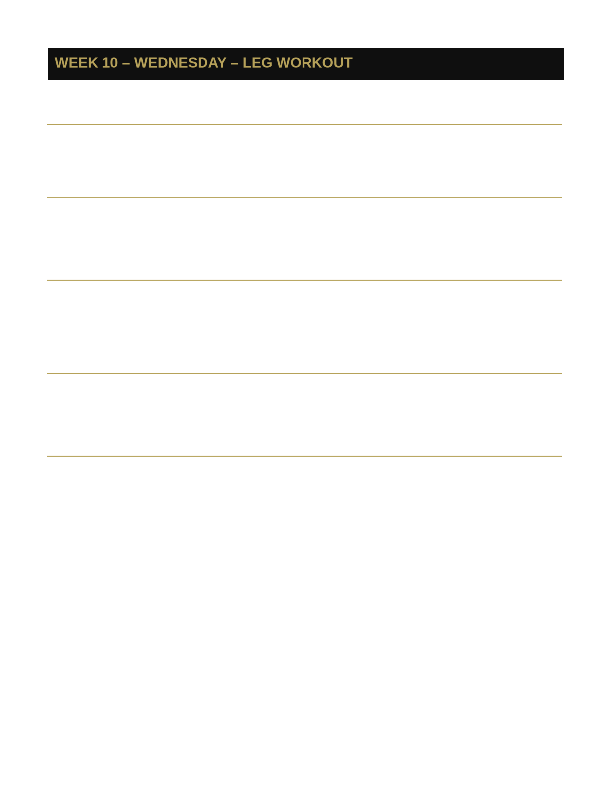
3/ 돌아가기 | 턱걸이 상단에서 잠시 멈추면서 10개 중 4개의 세트을 수행합니다. 필요한 경우 보조 기계를 사용하십시오. 총 작업량 한국어 섹션 제목 3 목표 9 목표 목표: Supramax 4/ 돌아가기 | 농부의 이번이 세 번째이자 마지막 주입니다. 세트당 약 30야드를 걷는다. 4 세트을 수행합니다. 사람들이 사용하는 큰 노른자가 없다면 무거운 총 작업량 세트: 4 RPE: 9 목표: 전반적인 4 5/ 9-11 5/ 5/ 이두근 | 또 다른 주에도 마찬가지입니다 총 작업량 세트: 4 RPE: 9 목표: Supramax 펌프 6/ 이두근 | Fatgripz를 이용한 해머 컬 여기서 10개 중 3 목표 9 목표 목표: Supra 7/ 복근 | 행잉 레그 레이즈 여기서 실패하려면 6 세트을 수행하십시오. 총 작업량 세트: 6 RPE: 10 1/ 가슴 | 기계 프레스 힘든 12단계까지 3 한국어 섹션 제목 9 한국어 섹션 제목 한국어 번 목표: 펌프 활성화 및 시작 2/ 가슴 | 덤벨 플라이 나에게 8 반복을 4 3/ 9-10 CM STRENGTH DYNASTY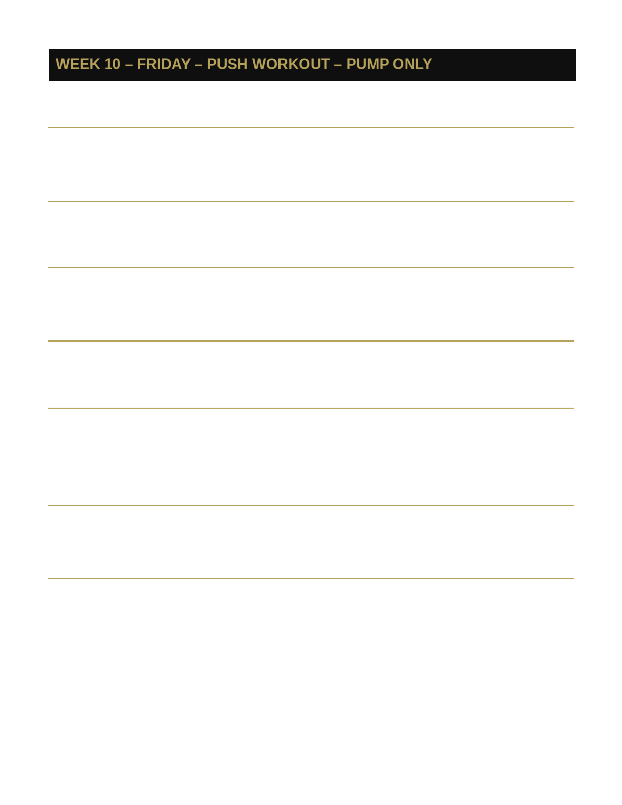
완벽한 형태로 여기에서 8개 중 3개 세트을 한국어 번역문 한국어 번역문 한국어 번역문 한국어 번역문 한국어 번역문 목표: Suprama 3 5/ 8-10 5/ 5/ 종아리 | 시티드 카브 중간 중량으로 15회 중 6회 한국어 번역문 한국어 번역문 한국 목표: Suprama 4 낮 월요일 화요일 수요일 8 목요일 9 목요일 목요일 금요일 토요일 일요일 4 집중하다 당기다 푸시 다리 풀 펌프 푸시 펌프 8 다리 9 다리 다리 펌프 끄다 연습세트 한국어 섹션 제목 4 한국어 섹션 제목 9 한국어 섹션 제목 한국어 번 한국어 번역문 한국어 번 한국어 번역문 한 한국어 섹션 제목 4 한국어 섹션 제목 10 한국어 섹션 제목 한국어 번 CM STRENGTH DYNASTY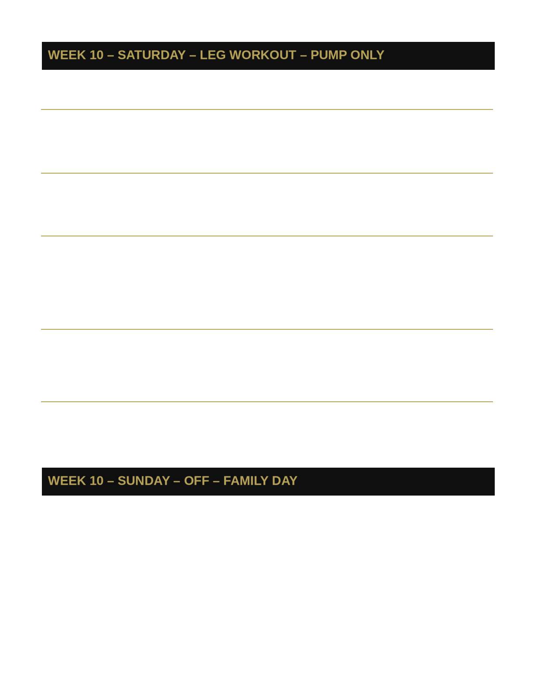
이번 주가 마지막 주입니다. 정말 내 모든 프로그램의 경우와 마찬가지로 지난주는 1/ 뒤로 | 3 자 9 자 자, 이제 세트/8로 총 작업량 세트: 4 RPE: 9 목표: 펌프 활성화 및 시작 2/ 돌아가기 | 3 지난 9 지난 지난 주에는 한국어 번역문 한국어 번역문 한국어 번역문 목표: Supramax 펌프 3/ 돌아가기 | 머신 풀오버 팔을 쉬게 해야 하므로 여기서 10개 중 4개 세트을 적중해 보겠습니다. 총 작업량 세트: 4 한국어 번역문 한국어 번역문 한국어 목표: 스트레칭 4 4/ 9-13 4/ 4/ 돌아가기 마지막 주에는 여기서 조금 미쳐가도록 할게요. 간신히 총 작업량 세트: 3 RPE: 7-10 목표: Sup 프로 팁: 컨트롤을 2 5/ 9 5/ 5/ 뒤로 | 덤벨, 요크, 물통 등을 이용해 이 총 작업량 세트: 3 RPE: 8 목표: 지구력과 힘 6 6/ 9 6/ 6/ 복근 | CM STRENGTH DYNASTY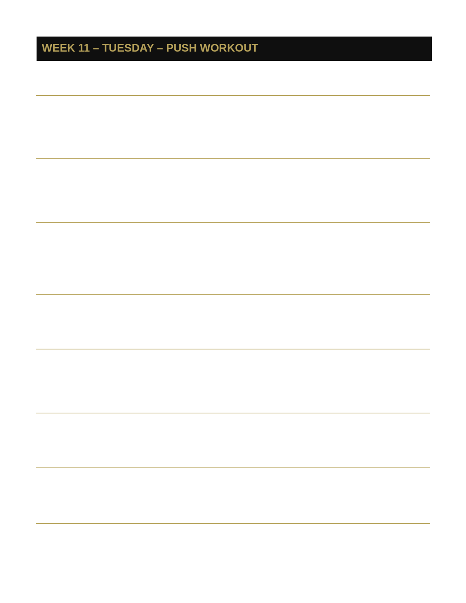
1/ 윗다리 | 거짓말 레그 컬 몇 차례 워밍업을 한 다음 힘든 무게로 8회 중 4회 세트을 수행합니다. 무게를 천천히 낮추고 조절하십시오. 마지막 세트에서 드롭을 수행하고 총 작업량 세트: 4 RPE: 9 목표: 활성화 및 3 2/ 9-10 2/ 2/ 윗다리 | 레그 익스텐션 세트 몇 번 워밍업을 한 다음 힘든 총 작업량 세트: 4 RPE: 9 목표: 폭발적인 훈련 3/ 윗다리 | 3 몇 개 몇 개의 피더 세트을 수행하여 힘든 한국어 섹션 제목 한국어 번역문 목표: Supramax 펌프 4/ 윗다리 | 핵 스쿼트 1.5초 여기에서 8개 중 3개의 세트을 1.5회 수행하세요. 이는 끝까지 내려갔다가 반쯤 올라갔다가 다시 깊이 내려갔다가 잠금 상태까지 올라오는 총 작업량 목표: Suprama 3 5/ 10 5/ 5/ 종아리 저는 8개 중 4개의 세트을 원합니다 한국어 번역문 한국어 번역문 한국어 번역문 한국어 번역 1/ 뒤로 | 3 이것은 9 이것은 이것은 일반적인 프론트 풀다운이지만 한국어 번역문 한국어 번역문 목표: 펌프 활성화 및 시작 2/ 돌아가기 | 가슴 지지 행 팔꿈치를 위로 4 한국어 섹션 제목 9 한국어 섹션 제목 한국어 번 목표: Supramax 펌프 3/ 돌아가기 | 켈소는 어깨를 으쓱한다 다음 라운드로 4 총 작 9 총 작 총 작업량 목표: Supramax 펌프 4/ 돌아가기 | 하이퍼확장 이것은 단순한 4 한국어 섹션 제목 9 한국어 섹션 제목 한국어 번 목표: Supramax 펌프 5/ 이두근 | 바벨 컬 이번 주에는 Fat 4 한국어 섹션 제목 9-11 한국어 섹션 제목 한국어 번역문 한국어 번역 CM STRENGTH DYNASTY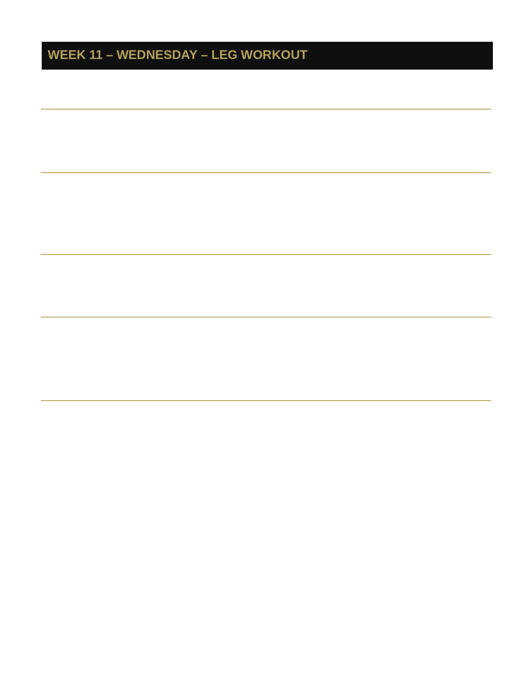
6/ 이두근 | 해머 컬 여기에도 Fat Gripz가 없습니다. 힘이 증가한 것을 느껴보세요! 여기서 10개 중 4개 세트을 수행하세요. 총 작업량 세트: 4 한국어 섹션 제목 4 목표 9 목표 목표: Supramax 7/ 복근 | 행잉 레그 여기서 실패하려면 6 세트을 수행하십시오. 총 작업량 세트: 6 RPE: 10 1/ 가슴 | 기계 프레스 힘든 8까지 올라가세요. 이 반복을 갈아주세요. 이 한국어 섹션 제목 3 목표 9 목표 목표: 펌프 활성화 2/ 가슴 | 약간의 감소 벤치의 한쪽 끝을 25파운드 접시 위에 올려서 약간의 경사가 발생하도록 합니다. 나에게 8 반복을 주고 SUPERSET WITH 3/ 가슴 | 3 아주 9 아주 아주 천천히 한국어 번역문 한국어 번역 목표: 스트레칭 자세에서 Supramax 펌프 및 근육 운동 이 프로그램을 받고 4/ 어깨 | 15 반복을 수행한 3 슈퍼세 9 슈퍼세 슈퍼세트 5/ 어깨 | 거미 크롤링 세트당 3번씩 벽을 오르내리세요. 각 스파이더 크롤링 세트 후에는 밴드를 사용하여 10회 이상 반복합니다. 어깨 재활 운동 총 작업량 세트 4 목표 9-10 CM STRENGTH DYNASTY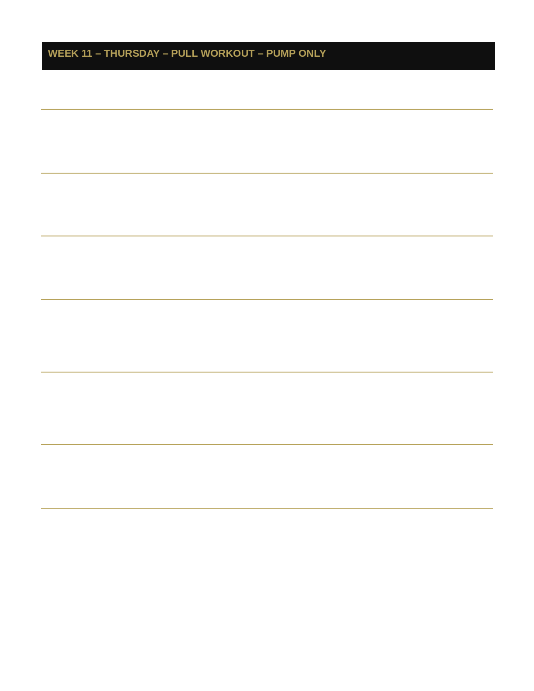
6/ 삼두근 | 로프 여기에서 15개 중 4개 세트을 수행하세요. 총 작업량 세트: 4 RPE: 9 목표: Suprama 4 7/ 9 7/ 7/ 삼두근 | 내전된 리베이트 여기에서 8개 중 4개 세트을 한국어 번역문 한국어 번역문 한국어 번역문 한국어 번역문 한국어 번역문 한국 목표: Suprama 4 1/ 9 1/ 1/ 윗다리 | 누운 레그 컬 워밍업 후 여기에서 한국어 번역문 한국어 번역문 한국어 번역문 한국어 번역문 한 목표: 펌프 활성화 4 2/ 9 2/ 2/ 윗다리 여기서 워밍업을 많이 총 작업량 세트: 3 RPE: 9-11 목표: Supramax 펌프 3/ 윗다리 | 4 여기서 9 여기서 여기서 한 번 더! 나는 당신도 총 작업량 세트: 4 RPE: 9-13 목표: Supramax 펌프 4/ 윗다리 | 밴드 바벨 루마니안 데드리프트 이번 주에 밴드를 4 총 작 9 총 작 총 작업량 목표: Supramax 펌프 5/ 종아리 | 시티드 무거운 중량으로 4 한국어 섹션 제목 9 한국어 섹션 제목 한국어 번 목표: Supramax 펌프 에스 체육관 안팎에서 6 한국어 섹션 제목 10 CM STRENGTH DYNASTY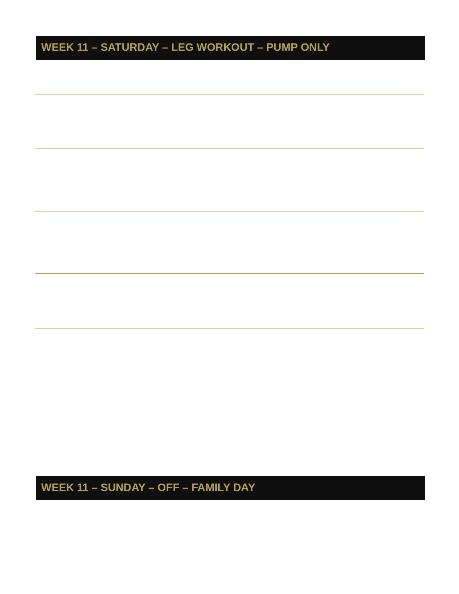
한국어 번역문 한국어 번역 한국어 번역문 한국어 번역문 한국어 한국어 섹션 제목 3 한국어 섹션 제목 9 한국어 섹션 제목 한국어 번역문 한국어 한국어 번역문 한국어 번역 한국어 번역문 한국어 번역문 한국어 번역문 한국어 번역문 한국어 번역문 한국 한국어 번역문 한국어 번역문 한국 한국어 섹션 제목 3 한국어 섹션 제목 9 한국어 섹션 제목 한국어 번 한국어 번역문 한국어 번역문 한국 한국어 번역문 한국어 번역문 한국어 번역문 한국어 번역문 한국어 번역문 한국 한국어 번역문 한국어 번역문 한국어 섹션 제목 4 한국어 섹션 제목 9-13 한국어 섹션 제목 한국어 번 한국어 번역문 한국어 번역문 한국 한국어 번역문 한국어 번역문 한국어 번역문 한국어 번역문 한국어 번역문 한국어 섹션 제목 3 한국어 섹션 제목 9 한국어 섹션 제목 한국어 번 한국어 번역문 한국어 번 한국어 번역문 한국어 번역문 한국어 번역문 한국어 번역문 한국어 번역문 한국 한국어 섹션 제목 6 한국어 섹션 제목 9 한국어 섹션 제목 한국어 번 CM STRENGTH DYNASTY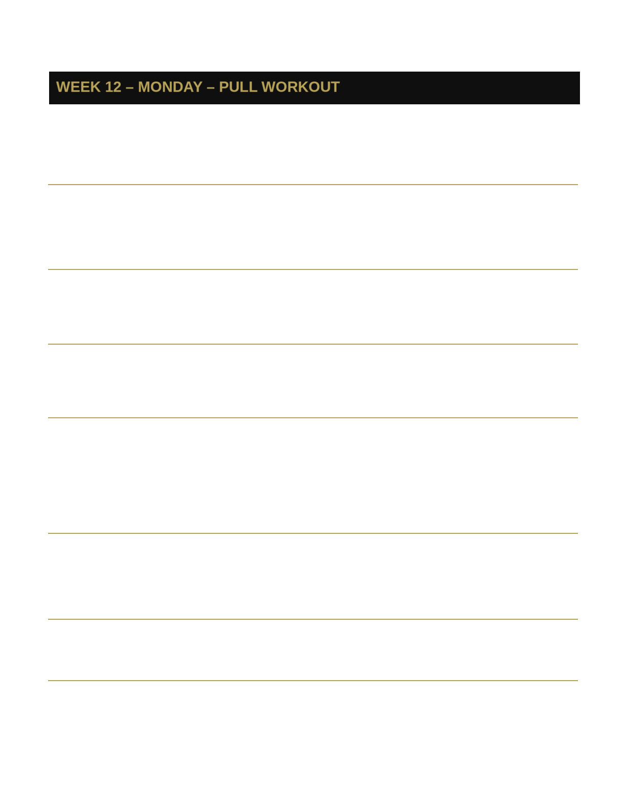
한국어 섹션 제목 한국어 번역문 한국어 번역문 한국어 번역문 한국어 번역문 한국어 번역문 한국 한국어 한국어 번역문 한 한국어 번역문 한국어 번역문 한국어 번역문 한국어 번역문 한국어 번역문 한국 한국어 번역문 한국어 번역문 한국어 번역문 한국어 섹션 제목 4 한국어 섹션 제목 9 한국어 섹션 제목 한국어 번역문 한국어 한국어 번역문 한국어 번역문 한국어 번역문 한국어 번역문 한국어 번역문 한국어 번역문 한국어 섹션 제목 4 한국어 섹션 제목 9 한국어 섹션 제목 한국어 번 한국어 번역문 한국어 한국어 번역문 한국어 번역문 한국어 번역문 한국어 번 한국어 섹션 제목 4 한국어 섹션 제목 9-10 한국어 섹션 제목 한국어 번역문 한국어 번역문 한국어 번역문 한 한국어 번역문 한국어 번역문 한국어 번역문 한국어 번역문 한국어 번역문 한국 한국어 번역문 한국어 한국어 섹션 제목 3 한국어 섹션 제목 7-10 한국어 섹션 제목 한국어 번 한국어 섹션 제목 한국어 번역문 한국어 번역문 한국어 번역문 한국어 번역문 한국어 번역문 한국 한국어 번역문 한국어 번역문 한국 한국어 번역문 한국 한국어 번역문 한국어 번역문 한국어 번역문 한국어 번역문 한국어 번역문 한국 한국어 번역문 한국어 번역문 한국어 번역문 한국어 섹션 제목 3 한국어 섹션 제목 8 한국어 섹션 제목 한국어 번역문 한 한국어 번역문 한국어 한국어 번역문 한국어 번역 한국어 섹션 제목 6 한국어 섹션 제목 9 한국어 번역문 한국어 한국어 번역문 한국어 번역문 한국어 번역문 한국어 번역문 한국어 번역문 한국 한국어 번역문 한국어 번역문 한국어 섹션 제목 4 한국어 섹션 제목 9-10 한국어 섹션 제목 한국어 번 CM STRENGTH DYNASTY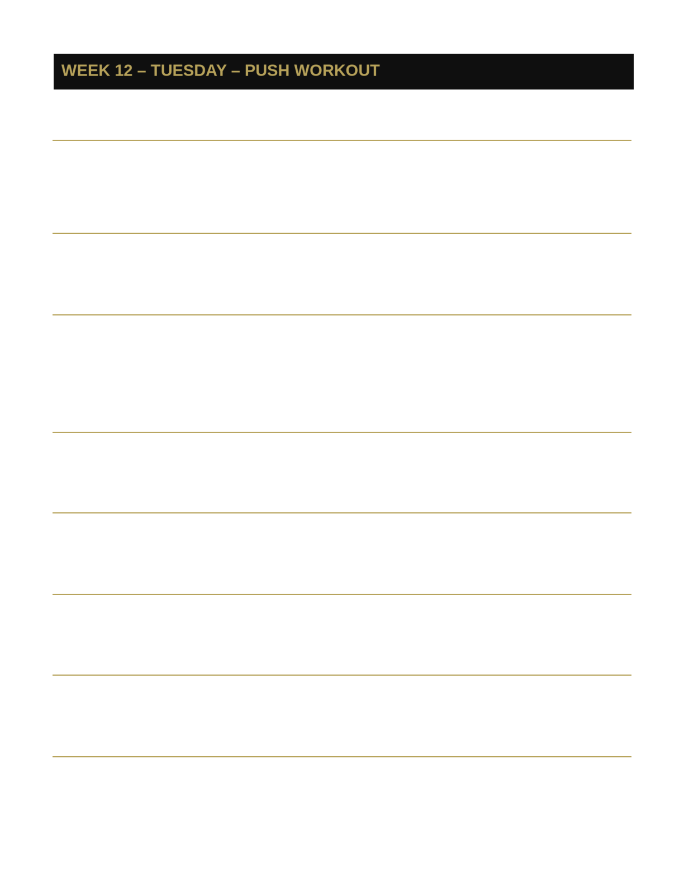
한국어 번역문 한국어 번 한국어 번역문 한국어 번역문 한국어 번역문 한국어 번역문 한국어 번역문 한국 한국어 번역문 한국 한국어 섹션 제목 3 한국어 섹션 제목 9-10 한국어 섹션 제목 한국어 번역문 한국어 한국어 번역문 한국어 번역 한국어 번역문 한국어 번역문 한국어 번역문 한국어 번역문 한국어 번역 한국어 섹션 제목 3 한국어 섹션 제목 한국어 번역문 한국어 번 한국어 섹션 제목 한국어 번역문 한국어 번역문 한국어 한국어 번역문 한국어 번역문 한국어 번역문 한국어 번역문 한국어 한국어 섹션 제목 4 한국어 섹션 제목 한국어 섹션 제목 한국어 섹션 제목 11 한국어 섹션 제목 한국어 번 한국어 번역문 한국어 번 한국어 번역문 한국어 번역문 한국어 번역문 한국어 번역문 한국어 번역문 한 한국어 섹션 제목 3 한국어 섹션 제목 9 한국어 섹션 제목 한국어 번역문 한국어 번역문 한국어 번역문 한국어 번역 한국어 번역문 한국어 번역문 한국어 번역문 한국어 번역문 한국어 번역문 한국 한국어 섹션 제목 4 한국어 섹션 제목 9 한국어 섹션 제목 한국어 번 한국어 번역문 한국어 한국어 번역문 한국어 번역문 한국어 번역문 한국어 번역문 한국어 번역문 한국어 섹션 제목 4 한국어 섹션 제목 9 한국어 섹션 제목 한국어 번 한국어 번역문 한 한국어 번역문 한국어 번역문 한국어 번역문 한국어 번역문 한국어 번역문 한국 한국어 섹션 제목 4 한국어 섹션 제목 9 한국어 섹션 제목 한국어 번 한국어 번역문 한국어 번 한국어 번역문 한국어 번역문 한국어 번역문 한국어 번역문 한국어 섹션 제목 4 한국어 섹션 제목 9 한국어 섹션 제목 한국어 번역문 한국어 번역 CM STRENGTH DYNASTY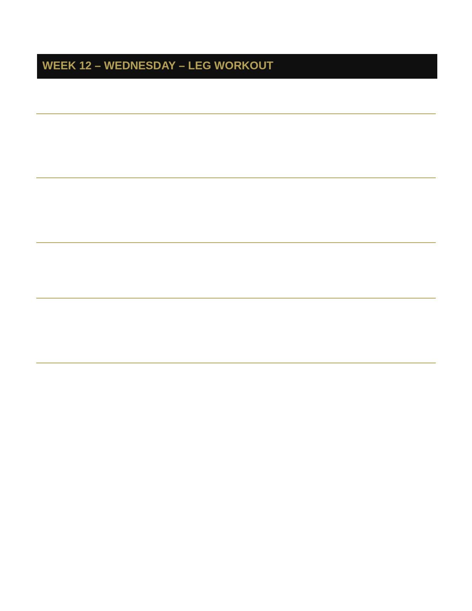
한국어 번역문 한국어 번 한국어 번역문 한국어 번역문 한국어 번역문 한국어 번역문 한국어 번역문 한국 한국어 번역문 한국어 번역문 한국어 번역문 한국어 번역문 한국 한국어 섹션 제목 4 한국어 섹션 제목 9 한국어 섹션 제목 한국어 번역문 한국어 번역문 한국어 번 한국어 번역문 한국어 번역문 한국어 번역문 한국어 번역문 한국어 번역문 한국 한국어 번역문 한국어 번역문 한국어 번역문 한국어 번역문 한국어 한국어 섹션 제목 4 한국어 섹션 제목 9 한국어 섹션 제목 한국어 번역문 한국어 번역문 한국어 한국어 번역문 한국어 번역문 한국어 번역문 한국어 번역문 한국어 번역문 한국 한국어 섹션 제목 4 한국어 섹션 제목 9 한국어 섹션 제목 한국어 번 한국어 번역문 한국어 번역 한국어 번역문 한국어 번역문 한국어 번역문 한국어 번역문 한국어 번역문 한국 한국어 번역문 한국어 번 한국어 섹션 제목 3 한국어 섹션 제목 9 한국어 섹션 제목 한국어 번 한국어 번역문 한국어 번역 한국어 번역문 한국어 번역문 한국어 번역문 한국어 번역문 한국어 번역문 한국 한국어 섹션 제목 4 한국어 섹션 제목 9-10 CM STRENGTH DYNASTY